| 思い出したくもないつらい過去にサヨナラする本―――イヤな記憶はこうして消せる | |
| 水元和也 | |
| こう書房 (2016) | |
イヤな記憶を消すのは意外と簡単。あなたも、必ず変われます。
─── はじめに
十数年前、私もみなさんと同じようにイヤな記憶が頭から離れず苦しんでいたことがありました。日常生活のあらゆる場面で、その思い出したくもないイヤな記憶が頭の中から離れず、何度もグルグルとリピートして、そのたびに不快な気分を味わっていました。いつも責められているような気持ちを感じ、イライラし、落ち込み、つらい毎日を過ごしていたのです。
しかし、転機は訪れました。それは、とあるセミナーに参加した時のことです。まさしく、その時の私が知りたかった〝イヤな記憶から離れるワーク〟を講師の方が壇上で実践してくださったのです。
それまでは自動的に湧いて出てくるイヤな記憶をコントロールできるなんて思ってもみませんでした。しかし、それは違っていました。記憶は誰でも簡単に消せるのです。そのことを知った私は夢中になってあらゆる文献を読みあさりました。いくつものイヤな記憶を消し去ることで、お風呂やトイレや寝る前のベッドの中でも、とても快適に過ごせるようになったのです。
そして、その体験を通して学んだのは、主体性を持って自分自身の力で思考をコントロールすることは可能なのだということだったのです。それはまるで暗闇の中で輝く光のように、生きていくための小さな希望となりました。
〝自分は変われる〟ということを知ってからは、自分が変化することが楽しくなり、さらに心理カウンセリングについて深く学び始めました。学ぶごとに、ひとつひとつ私の思考が変わり始め、生きることがこれまでにないくらい楽になっていったのです。対人関係も自分自身の性格もセルフイメージも、すべてが変化していきました。
諸行無常。本当は、変わらないものなんて何ひとつないはずです。現在もイヤな記憶に苦しめられている方が、一瞬でも早く、ほんのわずかでも楽になってくれたら、とてもうれしく思います。この本があなたの人生を変える最初の小さな第一歩になることを願っています。そして〝自分は変われるんだ〟ということを体感してください。
思い出したくもない つらい過去にサヨナラする本 もくじ
─── はじめに
序 章
第１章
第２章
＊エクササイズ① 替え歌を作ってみる
＊エクササイズ② 呪文を唱える
【フォーカスを変えるエクササイズ】
＊過去の楽しかったことにフォーカスする
＊未来のチャレンジしてみたいことにフォーカスする
＊海外旅行に行くとしたら、どこに行く？
＊10億円が当たったら、何に使う？
＊新しいことにチャレンジする
【脳の再パターン化プログラム】
第３章
第４章
カバーデザイン ＊ 伊藤光俊（株式会社いとう企画）
本文イラスト ＊ しんぼけいこ
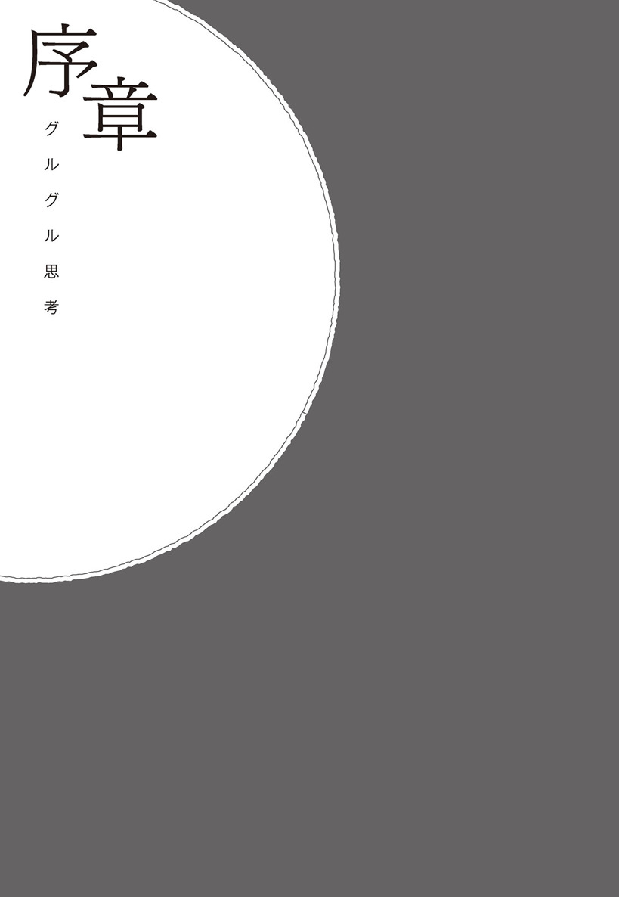
「先生、記憶って消せるんですか!?」
僕は、それがいちばん聞きたかった。
記憶は消せるのか？ そして、もし消せるのであればその消し方を知りたかった。僕にはどうしても消したいけれど、いつも僕の頭につきまとい消せない記憶があったのだ。そのためだけに、知人からもらったメモを手に車を走らせ、山奥の先生のところまで来た。
夕暮れが近づき、鳥の声のざわつきが収まり始めた頃に、ようやく先生の家を発見した。
先生の住まいは、観光地でもない山のふもとの細い曲がりくねった道の先にある、こじんまりとした小さな一軒家だった。表札はなく、ポストも呼び出しのチャイムさえもなかった。
周りには他の民家もなく、外界から隔絶された林の中にぽつんと建っていた。
先生は庭で野草を摘んでいた。
僕はその初老の男性に声をかけた。
「こんにちは、先生ですか？」
先生は穏やかでにこやかな笑顔で答えた。
「ええ、そうです」
「今日は先生にお話をおうかがいしたくて来てみたのですが、少しお時間をいただいてもよろしいでしょうか」
「ええ、かまいませんよ」
縁側に座るようにうながされ、先生はお茶を入れてきてくれた。
そして少し離れた位置に腰かけ、話を切り出してくれた。
「どんな話が聞きたいですか？」
突然の来訪にもかかわらず、イヤな顔ひとつせずにお茶まで出してくれて、恐縮していた僕に、優しくまるで包み込むような穏やかな声が染みてきた。
「先生、さっそくお聞きしたいことがあります」
「ええ、どうぞ」
「先生、記憶って消せるんですか!?」
僕の自信なさげな小さな声が、夕暮れの森に吸い込まれるように消えていった。先生は一呼吸おいて、ゆっくりとした口調で話し始めた。
「そうですね、結論から言えば、消すことは可能ですよ」
「それは、どのような記憶であってでもですか？」
「そうですね。まずはどのような記憶を消したいと思っているのか、お聴かせください」
そうやって、僕の記憶を消すための話し合いが始まった。
僕は今、印刷工場の会社員として働いている。
僕が消したいと思っている記憶は今の会社でのできごとではなく、学生時代にアルバイトをしていた時の話だ。
僕は小さな飲食店でアルバイトとして働いていた。
マニュアルを守りつつも、細かいところでは自分なりに気をつかいながら接客していた。
「お客様のために一生懸命やる」というその飲食店の方針には多いに賛同できたし、また学ばされることもたくさんあった。
その飲食店のオーナーは客足が増えないことに悩んでいた。
それを知った僕は、お店の暇そうな時間を見計らってオーナーに声をかけた。
「こういうふうにしたら、お客さんが増えませんかねぇ」
自分なりに良かれと思って考えた提案だった。
もちろん、感謝されることを期待していた。
オーナーからの反応は予想に反するものだった。
「うるさいんだよ！ お前が店を持ったら自分の店でやれ！」
罵声だった。
僕はあっけにとられ、なにも言えずにその場から離れた。
バックヤードに戻り、お皿を洗いながら記憶をたどってみた。
自分はそんなに怒られるような発言をしたのだろうか。
お客さんのいない、比較的に余裕のある時間帯。
自分なりにオーナーのお店のことを考えた発言。
しかし、返された言葉は
「うるさいんだよ！ お前が店を持ったら自分の店でやれ！」
何がいけなかったんだろう？
自分には理解ができない。
そのことをありのまま、先生に話した。
先生は静かに答えた。
「納得できていないのではありませんか？」
そう、そのとおりだ。納得がいかない！
自分は良かれと思って伝えたのに、頭ごなしに怒鳴るなんて。なんで僕がこんな扱いを受けなければならないのか。到底、納得ができない。
「そうです、先生。納得がいってません！」
先生の言葉が腑に落ちた僕は、少し早口になった。
その納得のいかないできごとがいつも僕の頭にこびりついて、何かがあるとすぐに思い出し、イヤな気持ちになる。もう、３年も前のできごとなのに忘れられない。
朝、顔を洗っている時も電車に乗っていても、お風呂に入っていても、トイレに入っていても、歯を磨いていても、いつもだ。
そして、夜、寝る前にベッドの中に入り電気を消し眼を閉じると、さらに克明にリアルに思い出しては、何とも言えないイヤな気分になるのだ。
「なるほど」先生は言った。「それ以外でも、イヤなことを思い出すことはありますか」
僕は少しとまどった。
その納得のいかない記憶だけが問題で、それさえ消えれば自分の人生はまっとうになると思っていたので、それ以外の記憶のことなどは考えたこともなかった。
先生はうながすように言った。
「たとえば飲み会の帰り道に、頭の中で反省会が始まったことはありますか」
まるで頭の中を見透かされたような気持ちになった。
たしかに、そうだ。
飲み会の帰りなどは、だいたい反省会をしている。
歩きながらでも、電車の中でも「あんなこと言わなきゃよかった」とか「もうちょっと気をつかえばよかった」とか、そんなことばかりを考えている。
「ええ、たしかにそうです。飲み会の帰りには必ず反省会が始まります」
僕は続けた。「そして家に着いてからもずっとそのことばかり考え、眠れなくなってしまうこともしばしばです」
飲み会が終わり、帰宅するのは深夜。疲れ果てて家に帰り着き、早く眠りたいにもかかわらず、頭の中だけが「グルグル思考」のフル回転で、まったく寝つけない。
「先生、なんでそんなことまでわかるんですか」僕は聞いた。
先生の答えは予想どおりのものだった。
「私も以前はそうでしたから」先生は笑いながら答えた。
僕は深刻に考え真面目に相談に来たのに、先生と話していると、取るに足らないようなことのように思えてくる。
僕が悔しい思いや罪悪感を抱え、そのことを話している最中もずっと笑顔で聴いてくれている。その態度に僕は少し気が楽になった。
グルグル思考
頭の中の反省会
帰りがけの電車の中、先ほどまでの飲み会やデート、仕事場でのできごとを思い出し、落ち込んだりイヤな気分になったことはないでしょうか。そう、頭の中の反省会です。私はこれを「グルグル思考」と呼んでいます。
ちょっと空気を読めない発言をして場が静まり返ったり、自分の発言であの人が傷ついてしまったのではないか、あんなことを言ったからあの人がイヤそうな顔をしたのではないか、だから無視されたのかもしれないとか、ちょっとからかわれるようなことを言われ、それが頭の中でグルグル巡って何度も何度も思い出し、そのたびに落ち込んだり。
思い出しても意味がないとわかってはいるものの、その記憶が勝手に頭の中で壊れた映写機のようにその時の場面が何度も上映され、イライラしたり落ち込んだりすることがあると思います。
デートの帰り道、あんなこと言わなければよかったな。どう思われただろう？ なんであんなことを言われたんだろう？ 嫌われたのかな？ あんなこと言われてすごく腹が立った！ というような時にも「グルグル思考」は始まります。
それ以外でも、会社でのミーティングの時に場違いな発言をしてしまい、みんなに笑われてすごく恥ずかしい思いをしたりとか。それで、その後に何度も何度も思い出してしまい恥じ入る。そういう時は思い出すたびに恥ずかしさのあまり、叫びだしたくなるほど心が苦しくなり、みじめな気分になります。
「グルグル思考」は、自分の失敗したことだけではありません。自分が悪くないのに頭ごなしに叱られたり、一方的にバカにされたりした時には、悔しさ、イライラ、そして悲しくなったり、言葉では表現できないような悶え苦しむほどの不快な感情とともに、その時のことが記憶されてしまうのです。
親や恋人にわかってもらいたかったのにわかってもらえなかったことなども、悔しさの感情とともに定着しやすくなります。
でも、気をつけましょう。
現実に怒られたのは１回だけだったとしても、50回思い出してそれを味わうと、あなたの脳は50回怒られたのと同じようなダメージを受けてしまうのです。
しかもフルカラーで動画で、言われた言葉やその時の相手の顔、言われた場所や周りの雰囲気などもすべてリアルに思い出して味わっていると、あなたの心は現実に起こっている時と同じくらい傷ついてしまうのです。
眠れない
このように、頭の中で「グルグル思考」が始まってしまうと、いちばん困るのが、眠れなくなることです。人間の三大欲求のひとつである睡眠を妨げられると、さらに苦しくなります。
誰かに言われたちょっとした言葉を頭の中で繰り返しながら、なかなか寝付けず時計だけが時間を刻んでいく。やっと寝付けるのは明け方の新聞配達のバイクの音が聞こえてくる頃。深く眠れないまま、短時間の睡眠をとったと思ったら、もう会社に行く時間になっている。
寝起きから心も身体も疲れ果て、なんかやる気の出ないまま出社しなければならず、人生は何のためにあるんだろう、と自分の人生を疑い始め、それでも頑張らねばならず落ち込みます。
こんな毎日を過ごしていると、本当にイヤになります。
夜、ベッドの中に入り、真っ暗な中で頭の中を巡るのは、相変わらず今日も体験した不快な記憶。
怒られたこと、誰かを怒らせてしまったこと、ダメ出しされたこと、笑われたこと、バカにされたことなどの心が傷ついてしまう納得のいかない悔しいできごと。自分がやらかしてしまった失敗、迷惑をかけてしまったことなどの罪悪感。あの人にはできたのに自分にはできない。自分はどんなに頑張ってもあの人には勝てないという劣等感。
そんなことを思い出してイライラしたり自分を責めていると寝付きが悪くなってしまいます。この脳の暴走は「自動思考」と呼ばれます。「よーし、今日もあのイヤな記憶を思い出してイヤな気持ちになってやろう」と思っているわけではなく、脳が勝手に暴走してイヤな記憶をグルグルと考え始めてしまうのです。
これらのことを感じていると「人生が思いどおりにいかない」という不全感に満たされることになり、やる気の出ない日常を送ることになってしまいます。
そうならないためには、脳を意識的にコントロールする方法を覚えましょう。自動思考に任せっぱなしにせず、意識的に自分が考えるべきことをコントロールすることは現実的に可能なのです。
ちなみに、寝付きはいいけど途中で目が覚めてしまう中途覚醒や早朝覚醒の方は、未来の不安が大きいのです。不安が大きい方は日常でも「失敗したらどうしよう？」「迷惑をかけてしまったらどうしよう？」「うまくいかなかったらどうしよう？」という、自分の未来の不安をあおる習慣があります。
私はこれを「どうしよう癖」と呼んでいます。これは過去に理不尽に怒られたり怒鳴られたりした経験に由来する場合が多いようです。
明確な不安がない場合でも、漠然とした将来への不安を抱えていると、ドキドキと緊張してきてなかなか寝付けない場合もあります。
では、逆に眠れるのはどんな時でしょうか。ここ数か月でスッと眠れた時のことを思い出してみましょう。また、眠ってはいけない場面で眠ってしまったことはないでしょうか。仕事中や退屈な会議など、「眠ってはいけない！」と思いつつも睡魔に負けてついウトウトしてしまった経験があるのではないでしょうか。
その他にも本を読んでいる時、映画を見ている時、プラネタリウムなどの静かな環境で眠ってしまうことがあると思います。自分はどんな時に眠ってしまうのかを知ることも、自分の睡眠をコントロールするのにとても役立ちます。
眠るためには脳を空っぽにするのがいいのですが、イヤな記憶が湧いてくる人はなかなかそれをコントロールすることができません。落ち込みやすい人、傷つきやすい人、抑うつ的な人は特に考えすぎる傾向にありますので、脳が勝手にフル活動してしまいます。
この「グルグル思考」のフル活動を止め、空っぽにするためには第３章でご紹介するいくつかのテクニックはとても役に立つと思いますので、ぜひ自分のやりやすい方法、自分に合った方法を見つけてください。
※私のホームページに「眠れるイメージワーク」もアップしておきますので、そちらも試してみてください。（ＵＲＬは巻末記載）
納得がいかない！
人生には納得のいかないことや、自分の信念・価値観に当てはめて考えると、どうしても腑に落ちないことがあります。納得がいかないことも「グルグル思考」の種になります。
たとえば、あなたが会社員だったとします。あなたが会社のためを思い頑張って企画書を提出した時に、たいして内容も見ていないような先輩社員にいきなり怒鳴られたら、きっと納得できないでしょう。「期日も遅れていないし、内容にだって自信がある。なんで怒られたんだろう？」なんか釈然としないし腑に落ちない。何がいけなかったんだろう？ いくら考えてもわからない。
ショッピングセンターで駐車場に車を停めたら、知らない人にいきなり怒鳴られたとか、そういう納得できないことも私たちに降りかかってくることがあります。怒られる意味がわからない。どんなに考えても納得できない。そんな経験はないでしょうか。
その他にも、日常生活で相手のためにと思って発言した一言が相手の逆鱗に触れてしまったようで、相手が勝手に猛烈に怒り始めたとしたらどうでしょう。怒らせてしまった罪悪感を感じる一方で、「こんなことで、そんなに怒ることないのに...」と納得がいかないと思います。
このように〝納得がいかない〟ことがあると「グルグル思考」が始まります。自分はあくまでも相手のためを思ってした発言なのに、なにかの誤解で怒らせてしまう。このようなケースは日常でよくあることです。
自分は悪くないのに頭ごなしに怒られたりすると納得がいきません。ですから、脳は記憶をたどってもう一度、先ほどのできごとを思い出してみるのです。
「何か自分はおかしなことを言ったのかな？」
「なんで相手は怒っているんだろう？」
納得する答えが見つかれば、それで脳は落ち着くのですが、納得できない事柄に対しては、私たちの脳は落ち着かないので不安定な状態になります。なんとか安定したいのでグルグルと納得のいく答えを探そうとしてしまうのです。
でもやっぱり納得がいかない。どんなに考えを巡らせても納得できる答えは見つからない。
なんでだ？ わけがわからない！ 悔しい!!
このように、納得のできないことや「悔しい！」という感情が伴った記憶は脳に保存されやすくなります。
人はみんな違う信念や違う価値観を持っているので、相手が自分と同じように考えてくれるとは限りません。人それぞれでコンプレックスに思っていることなども違うのです。そのコンプレックスを指摘された時にも人は怒るものなのです。
なかには、わざわざ悪い解釈をして怒ってくる人もいます。あなたが良かれと思ってアドバイスをしても、それが何かしらの相手のコンプレックスに引っかかった場合は、「それができない私が悪いっていうんでしょ!?」と、相手が勝手に激怒することもあるのです。
こんな時はわかってもらおうとか誤解を解こうと思っても無駄なことが多いので、自分なりの納得のいく答えをつくってしまうのがいいのです。言われた言葉をそのまま真に受けず、「何かわからないけど、何かがイヤだったんだね」と相手の立場に立って相手を思いやってみましょう。
もし、それが難しいのであれば、相手のせいにしてしまいましょう。
「あの人はきっと機嫌が悪かっただけだな」とか「あの人は心の狭い人なんだ」とか「はいはい、ああいうコミュニケーションしかできない人なんだな」とか。
なんでもよいのです。納得のいかないことをいくら考えても納得しようがありませんので、適当な答えを出して、あとは忘れることです。
いじめもそうですね。いじめには納得のいく理由なんてありません。おとなしく真面目にしていても、いじめられることはあるのです。自分にはまったく落ち度がなくおとなしくしていても、いじめは起こり得るのです。
「なんで自分はあの時いじめられていたんだろう？」「悔しい！」と考えても答えは出てきません。
いじめに遭うとすごく自尊心が傷つきます。自分は必要のない人間のように感じることもあるでしょう。
しかし、その時に間違った答えを出さないことです。
「自分はみんなに嫌われている」「自分なんていないほうがいいんだ」と考えるとさらに苦しくなるだけです。ただでさえ自尊心が傷ついているのに、さらに自分で追い打ちをかけるように自尊心を傷つける行為はやめましょう。
そのためには違う答えを出してください。少しでも自分の自尊心が守られるような答えを探してみましょう。
「自分は何も悪くない」「あいつらが頭がオカシイやつだった」「あいつらは今ごろ、みんなに嫌われてる」「あんなやつら、社会ではやっていけるわけがない」など、自分を責めるのをやめ、相手がオカシイことにしてしまってください。過去に起こった現実は変えられませんが、考え方や心の中は自由に変えることができるのです。
執着心
納得がいかないことのひとつに、好きな人に一方的に「別れを告げられる」「フラれる」ということがあります。
私たちは誰かに大切にしてもらったり求められたりすると、自己価値感が上がったような気がしてとても幸せを感じます。好きな人と出会い、何度もデートを重ねながら楽しい時間を過ごすと、この瞬間がずっと続けばいいと考えるのですが、やがてはどちらからか冷めてしまったりして別れの時が来ることもあります。
大切にしてもらった経験、愛された経験があると、その幸せの時間やその時間をくれた人に執着してしまい、なかなか忘れることができなくなります。
幸せな時間をつくってくれた相手が自分のもとを去ってしまうと、「自分は必要のない人間」「自分には価値がない」という考えが頭に浮かび、自尊心が傷つきます。誰かに高めてもらった自己価値感は、その人が去ってしまうと逆に下がっていってしまうのです。
「自分は何が悪かったのだろう？」「なぜ、別れなければならないのだろう？」「こんなに好きなのに！」あの楽しかった時間にはもう戻れない。いくらグルグルと考えても納得のいく答えは出てきません。今までずっと一緒にいてくれた相手が、もうそばにはいないという絶望感と大きな喪失感が、悲しみとともに襲ってきます。
「できれば、あの楽しかったころに戻りたい」「やり直したい」と思うこともあるでしょう。しかし、どんなに考えたところで、どんなに執着したところで、時間を巻き戻すことはできません。取り戻せない過去の楽しかった時間に執着していては、前に進むことができなくなります。
執着心は恋愛以外でもあります。大切に飼っていたペットとの別れの時にも、同じように一緒に過ごしたあの楽しかった時間を取り戻したいと、過去に執着してしまうものです。また一緒に遊びたい、一緒に散歩したいとどんなに願っても、それは叶えられることはないのです。
「今まで一緒にいてくれてありがとう」と、幸せに過ごせた時間に感謝し、執着を手放していきましょう。私たちは前を向いて生きていくしかないのです。
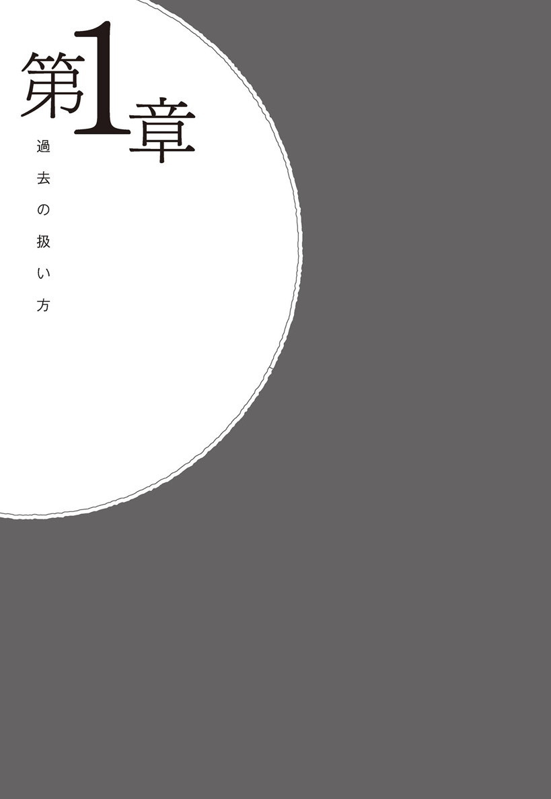
「では、どうやったら思い出さなくなるのでしょうか」僕は言った。
先生は即答した。「思い出さない、を続けるのです」
穏やかな語り口調のなかに、何かを確信した力強さがあった。
それは、しっかりと方向づけるような口調だった。
「思い出さない、を続ける。それはどういうことなのでしょう」
先生はにこやかな笑顔で答えた。
「たとえば、あなたは３日前の晩ごはんは何を食べましたか？」
「えっと...」
僕は言葉に詰まった。３日前はたしか、得意先との打ち合わせがあって帰宅するのが遅くなり、冷蔵庫の中にある買い置きの何かを食べたような気がするけど、それが何かが思い出せない。晩ごはんを食べてからお風呂に入る習慣なので、必ず何かを食べてるはずなのに、それが何なのかはまったく思い出せなかった。
「覚えていません...」
僕はやり込められたようで悔しかったが、正直に話した。
「そうですね。記憶とはそういうものです」
先生は話を続けた。「私たちには、優れた忘却能力というものが備わっています。ですから、そもそも過去のことはどんどん忘れていくほうが普通なのです」
「なるほど」僕は言った。
先生の言っていることには納得できた。しかし僕が知りたいのは、現実的にはどうやったら記憶が消せるのかという具体的なことだった。
そこで、率直に聞いてみた。
「先生、忘却能力のお話には納得できました。たしかにそのとおりかもしれません。しかし、私が聞きたいのは実際にはどうやればよいのかということなのです。もう少し具体的なお話をお聞かせください」
先生は暗くなり始めた森を見つめながら、軽くうなずいた。
「そうですね、お気持ちはわかります」
僕はじれったくなり、話を続けた。
「もっと、具体的なテクニックのようなものはないんですか？ もしあれば、それを教えていただきたいのですが」
「そうですね、具体的なテクニックはあります」先生は淡々とした口調で話した。「でも、その前に過去の扱い方を先にわかっていたほうが記憶は消しやすくなります」
その語り口調から読み取れるのは、どうも意地悪をしてじらしているわけではなさそうだということだ。
日も暮れはじめ辺りが段々と暗くなり、その様子に僕は焦っていた。しかし、先生にはちっとも焦る様子はない。時間の流れ方が僕とはまったく違うようだ。さっさとテクニックだけを教えてくれると思い込んでいた僕は、先生の話がすごくまどろっこしく感じた。
「どういうことですか」僕は少し苛立っていた。しかし、それを悟られないように冷静に質問してみた。
僕にとっては〝過去の扱い方〟などということについてはあまり興味のある話ではない。
「焦っていますか？」先生は見透かすように言った。
当たり前だ。明日も仕事なのに、悠長にこんなところで無駄な話をしている場合ではない。ほんのわずかでも早く記憶を消す方法を聞きたいのだ。
「ええ、もちろんです。こんな時間ですし」僕は答えた。
「そうですね、わかります。しかし物事には順序というものがあります」先生は続けた。
「時間のことはあきらめて、食事でもしながらゆっくり話しませんか」
僕は早く帰りたかった。明日も仕事だ。しかし、せっかくこんな山奥まで来て何も聞かずに帰るのももったいない気がした。
迷っている僕に先生は言った。「今日、畠で採れた野菜があるんですよ。野菜鍋でもいかがですか」
僕はあきらめた。先生のペースで物事は進んでいった。これは長丁場になりそうだ。
「わかりました、ごちそうになります」
簡素な部屋に入りると部屋の真ん中に囲炉裏があった。初めて入った部屋なのに、どことなく懐かしい感じがした。
野菜鍋を吊るした囲炉裏の前に座り、先生は話し始めた。
「あなたにとって、過去の記憶はどれくらい大切なのでしょうか」
僕はしばらく考え込んだ。幼少期から現在まで、ひとつのつながった記憶があるからこそ〝今の自分が自分である〟というふうに確信できる。もし、すべての記憶がなくなったとしたら自分は自分なのだろうか。僕は少し混乱してきた。
「そうですね。もしすべての記憶がなかったら、自分が誰だかわからなくなりますから、それは怖いですよ」
「ええ、そうですね。大まかな流れとしての記憶はとても大切ですよね」先生は話を続けた。「では、自分が誰だかわかっていてなんの仕事をしていてという大まかな記憶があったとして、その他の過去がなかったとしたら、あなたは明日からの生活に困りますか？」
「うーん。自分にとっての重要な記憶はある、という条件ですか？」
「ええ、そうです。たとえば自分が好きな食べ物を忘れてしまったら困るでしょうか」
僕は少し考えてから答えた。「さほど困ることはないでしょうね」
「そうです。過去の記憶の中でも重要なものとそうでないものがあります。たとえば自分の名前や家族の顔を忘れてしまうと、今夜、どこに帰ればいいのかもわからなくなってしまいますのでとても困るでしょう。しかし好きな食べ物を忘れてしまっても、新しい自分が、新しく好きなものを見つければいいのです」と先生は言った。
「なるほど、たしかにそうですね」僕は答えた。
「ですから、過去にこだわりすぎたり、とらわれすぎたりする必要はないのです。自分にとって最小限の過去だけを覚えておけばいいのです」先生は言った。
「なるほど。でもどうやったらそれができるようになるのでしょうか」僕は質問した。先生の話は核心からずれているような気がした。僕は早く記憶を消すための答えが知りたかった。
「あなたは今日、ここまで自動車を運転してきましたよね」
「ええ」
「前を向いて運転しましたか？ それともずっと後ろを見ながら運転して来たのでしょうか？」
先生は少し意地悪だ。もう答えのわかっていることを質問してくる。しかし、きっと何かを伝えたいからこういう質問をしてくるんだろう。僕は冷静になり答えた。
「ちゃんと、前を向いて運転してきました」
「そういうことです。運転のしかたや交通法を忘れてしまっては問題がありますが、後ろに過ぎ去った道路や景色のことはそれほど重要ではないのです。大切なのは前を向いてしっかりと運転することです」
「ええ、わかります。でも先生、それが記憶となんの関わりがあるのでしょうか」
「人生の生き方も、実は同じなのです」
先生の話を聞いていて僕は少し納得した。たしかに僕は過去にとらわれすぎていたのかもしれない。後ろばかりを振り返りながら生きてきたような気がする。この毎日思い出すイヤな記憶がなくなったところで僕は困ることは何もない。むしろ楽に生きていけるはずだ。僕の心の中で、大きな氷のかたまりの一部がほんの少しだけ溶けたような気がした。
「過去とは、それほど重要なものではないのです」先生は、そう言い残したまま席を立った。そして台所に消えていった。
残された僕は囲炉裏の火を見つめながら一人で考えた。
「過去はそれほど重要ではない」その言葉が印象に残った。
過去の扱い方
記憶を消すためのテクニックは様々ありますが、それより先に「過去とは何なのか」を知っていたほうが記憶は消しやすくなりますので、それをこれから学んでいきましょう。
過去の扱い方がわかれば、離れた位置から少し客観的に自分を観察することができるようになります。そうすることにより、格段に記憶を扱いやすくなります。過去にこだわらない生き方を知るということは、楽に生きるためのマインドセットを手に入れるということでもあります。
この章では、まず記憶と呼ばれるものの正体を知っていきましょう。
記憶はすべて過去のもの
あなたの頭の中にある記憶は、すべて過去に起こったできごとです。過去とは文字どおり、もうすでに過ぎ去ってしまったできごとのことなのです。過ぎ去ってしまったことを悔やんだり、何度も思い出してイライラしたり悲しんだりしたところで、それは絶対にくつがえることはありません。
絶対にくつがえらないことを何度も反芻して味わったところで時間の無駄なのです。10万回思い出すことで、その過去の現実を変えることができるのであれば、そうしてもかまいません。何度でも思い出して味わってみましょう。
しかし、よく考えてください。１００億万回思い出したところで、過去のことは何ひとつ変えることはできません。変えることができないのであれば、思い出すだけ無駄なのです。「あれは仕方がなかった」「もう済んだことだ」と自分に言い聞かせてください。
時間の無駄だと理屈ではわかっているはずなのに、私たちの多くはなぜ過去のネガティブな記憶に振り回されてしまうのでしょうか。
それは、失敗した、間違った、笑われた、バカにされたということがあると自尊心が傷ついてしまうからなのです。失敗したことを忘れてしまい、また同じような失敗を繰り返せば、人間の生活も文明も発展することができません。
ですから、私たちはそのようなできごとがあると、そのことを強く記憶にとどめ、また同じような失敗を繰り返さないようにするためにネガティブな記憶をとどめてしまうのです。これは私たちの脳の機能の一部なのです。そして、それは人間としての生き残り戦略だったのです。
原始時代であれば、ちょっとしたミスが命取りになることもあったでしょう。たとえば、私たちの祖先が平原を歩いていてライオンに出会った時、「あのライオンさんと仲良くなれるかもしれない」と思ってしまうような人のＤＮＡは淘汰され、生き残ってこれなかったのでしょう。また崖の上を歩いている時に、その崖から落ちかけてひやっとしたにもかかわらず、それをすっかり忘れてしまえば、何度でも命の危険にさらされることになってしまいます。
自分勝手な行動や言動をしてしまい、周りの人から疎まれることは、私たちの祖先にとっては死を意味することでもあったのです。村長さんや周りの人たちに何度怒られても、そのことをすっかり忘れてしまい、いつもいつも迷惑ばかりかけている人であれば、村からの追放を余儀なくされることもあったでしょう。村から追い出されてしまった人がたった一人で生きていくのはとても困難だったと思います。ですから一度怒られたことは、しっかりと記憶にとどめ、同じ過ちを繰り返さないようにすることはとても大切なことだったのです。
私たちはネガティブなことを強く記憶にとどめておかなければ、また同じような場面で同じ失敗を繰り返すことになってしまうので、原始時代であれば命の危険があったのです。
しかし現代社会では、何かのミスをしたところで命にかかわるような危険はさほどありません。ミスを連発してしまい会社をクビになることはあるかもしれませんが、それでも命の危険というほどのことはないのです。「よし、次は失敗しないようにしよう」くらいで十分です。それにもかかわらず、私たちは原始時代の戦略をそのまま使っているのです。
過去の失敗や間違い、イライラすることを何度も思い出したところで、何ひとつ変化させることはできませんので過去にこだわる必要はないのです。過去にこだわりながら生きる人生は、後ろ向きの人生です。
みなさんのなかには自転車や自動車を運転される方もいらっしゃると思います。その時に後ろ向きに乗る人はいないでしょう。ちゃんと前を向いて座るはずです。乗馬する時もロバに乗る時も像にまたがる時も必ず前向きだと思います。後ろ向きに乗ったり、後ろばっかり振り返っていては前に進むことができなくなってしまいます。
私たちは未来にしか進むことはできません。しっかりと前を向いて生きる決断をしてください。
常に「これから」のことを考える習慣を身につけましょう。
記憶はただのイメージ
ある朝、シャワーを浴びながらふと思いました。それは、みなさんが記憶を「確固たる記憶」として捉えるから、書き換えや消すことが難しくなっているのではないかということです。
「記憶」というと、なんとなく書き換え不可能な確固たるもののように感じていると思います。しかし記憶というのは、パソコンのハードディスクに整列的にキッチリと保存された書き換え不可能な情報ではありません。ただのイメージだと思ってください。〝ただのイメージだ〟と捉えたほうが記憶は扱いやすくなり、のちのち記憶を書き換えたり消去したりといったコントロールがしやすくなります。
たとえば、昨日の晩ごはんを実際に思い浮かべてみてください。
あなたは昨日の晩ごはんは何を食べましたか？
（もう、すでに記憶が消えている方もいらっしゃると思いますが）
その記憶のごはんをこれから少しいじってみましょう。
その記憶のごはんは熱々ほかほかです。ごはんから立ち上がる湯気を足してみてください。まるで冬の温泉から立ち上がる蒸気のように湯気を足してみましょう。次にそのごはんを冷まして、冷たいご飯にしてみてください。どんな感じがするでしょうか。
そのごはんに、あり得ないほどたくさんの塩と胡椒と唐辛子をかけてみましょう。思いっきりかけてみてください。その次にそのごはんを白黒の映像にしてみましょう。
その記憶のごはんの食べ終わったお皿を、窓から放り投げてみてください。ポイポイっと思い切って。
いかがですか？
もし、ほんの少しでもコントロールできるのであれば、それは書き換え不可能な確固たる記憶ではなく、ただのイメージだということがわかるでしょう。最初はうまくできなくても、訓練すれば必ずコントロールできるようになります。
次に、最近行ったコンビニを思い浮かべてみてください。あなたにはたしかにコンビニに行った記憶があると思います。しかし、今、あなたが思い出している記憶はどれほど正確なのでしょうか。
コンビニの入り口に立った時、なんのポスターが目に入ってきましたか？ そのポスターにはどんな文字が書いてあったのでしょうか。商品を手に取った時、その周りには他にどんな商品が置いてありましたか？ レジでお金を払ったと思います。金額はいくらでしたか？
店員さんの顔は覚えていらっしゃるでしょうか。
記憶なんて、とても曖昧であやふやなただのイメージでしかないのです。
もう一つ実験してみましょう。
コンビニの前に立っている自分を客観的に、傍観者のように第三者の目線で眺めてみてください。コンビニの前に立っている自分を観察してみましょう。
これは少し難しいかもしれませんが、ほんの一瞬でも思い浮かべられたとしたら、それは確実にあなたの記憶ではありません。なぜなら、現実には自分を第三者の視点で観察することは絶対に不可能だからです。幽体離脱でもしない限りは、ですね。
それがみなさんの思っている記憶と呼ばれているものの正体です。
思い出すだけでイヤになるような記憶があるのであれば、それに振り回されず、意識的にコントロールすることが大切なのです。自動思考に任せていると、私たちの脳は勝手に暴走してしまいますが、暴走させないように意識的にコントロールすることを心がけてみてください。
「記憶なんて、しょせんは脳内にあるイメージだ」と考えましょう。
考え方のクセ
いつも過去の記憶を思い出してしまうのは、考え方のクセなのです。このクセのことをパターンと言います。無意識化された習慣のようなものです。私たちは思考においても行動においても、ほとんどのことがパターン化されています。
たとえば朝起きた時、どのような行動をとるのかは人それぞれでだいたい決まっています。ベッドからの降り方やスリッパの履き方。それからまず顔を洗う人は顔を洗うし、先に朝食を摂る人は朝食を食べます。歯を磨く人は歯を磨くし、トイレに行く人はトイレに行きます。ほとんど毎日、無意識的にパターン化された行動をとっているのです。スプーンやお箸の持ち方も、なにか飲む時でも同じやり方をしています。
今朝、玄関を出る時に靴を履いたと思います。はたしてあなたは右足から靴を履きましたか？ それとも左足から履いたのでしょうか？
ほとんどの人がそれを覚えていません。意識的に履いているわけではないからです。朝、玄関に立った時に「よし、右足から履くぞ！」と意識することはほぼありません。無意識のパターン化された行動として、自動的に履いているのです。
毎日使うカギの置き場所や財布の置き場所は、ほぼ毎回同じ場所に同じように置いていませんか？ これもパターン化されています。
車で買い物に行こうと運転していて、いつもと同じ道を通っている時、ついついクセで無意識的に目的地ではない、いつもと同じ場所に向かってしまったという経験をした方もいらっしゃるでしょう。
これは行動のパターン化ですが、実は思考も同じようにパターン化されているのです。ほとんどの人が毎日、同じような考え方のクセを使って情報を処理しています。無意識化されたパターンのままの思考をほぼ毎日、同じようにしているのです。
世の中にはたくさんの人がいます。前向きな人は、自分と同じようなミスをしてもあまり悔いることもなく、どうやったらミスを取り戻せるかな？ というこれからのことに焦点を当てて考え、前向きな人生を送っています。
後ろ向きな人は多くのことを、後ろを振り返りながら考えます。過去のもうすでに終わってしまった記憶に焦点を当てて考え、自分を責め、落ち込み、つらく苦しい人生を送っています。
自分がいつも過去のことばかりを考えているのではないか？ と考えてみてください。まずは自分の持っているパターンに気づくことが重要になります。
優れた忘却能力
読み進める前に、みなさんも実際に思い出してみてください。
「３日前の晩ごはん、あなたは何を食べましたか？」
さて、はたして何人の方が答えられたでしょうか。私たちはたった３日前のできごとでさえ正確に思い出すことはできないのです。ましてや10日前の晩ごはんを覚えていらっしゃる方はさらに少ないでしょう。
数日前どころか、今、目の前にあるものですら正確には覚えていないこともあります。たとえばあなたが毎日目にしているはずの携帯電話やスマートフォンのデザインを正確に描いてみてください。毎日見ているはずの時計のデザインを、どれだけ正確に描けるでしょうか。
私たちはすでに、自分がどれだけ忘れっぽいのかを知っています。「最近はパソコンで文字を打つ機会が増えたから、漢字を忘れちゃったよ」。こんな会話を耳にしたことがあるのではないでしょうか。
そうなのです。以前、覚えたはずの漢字でも、普段から使っていなければ脳から消去されていくのです。もし、一度見ただけの漢字をすべて覚えていられるなら、漢字の学習や英単語の学習はずっとずっと楽になったでしょう。
また、買い物に行った時に一番メインだったはずの物が何だったのかまったく思い出せずに「あれ？ なんだっけ...」と頭を抱えてしまった経験もあるでしょう。他にも頼まれた書類の作成を忘れていたり、旅行に持って行くはずの大切なものを忘れてしまったりと、私たちは普段から多くのことを忘れてしまっています。
どうしても人の名前を覚えるのが苦手という方は案外多いのではないでしょうか。初めてお会いした方の名前を聞いたそばからすぐに忘れてしまって、失礼なので聞き返すわけにもいかずにそのままになってしまうこともあったと思います。
みなさんは中学校で習った数学の方程式をどのくらい覚えていらっしゃるでしょうか。また社会科で習った地図記号をどのくらい書けるでしょうか。私なんて中学校、高校で習った英文法や数学の方程式のほとんどを忘れてしまっています。でも、社会生活で困ることはほとんどありません。興味のないことや必要のないこと、繰り返し学習しないことは私たちの脳からは消去されるようにできているのです。
一度覚えたことをすべて覚えておけるなら、メモ帳などというものはこの世に発明されていないはずです。多くの人が忘れっぽいからこそ、メモ帳は必要とされているのです。
このように、私たちにはすでに優れた忘却能力が備わっているのです。
何度も反芻しない
私たちの脳はそのメカニズム上、記憶のイメージを繰り返せば繰り返すほど、さらにその記憶を強化してしまうのです。思い出すだけでイヤになる記憶を何度も何度も味わっていると、その記憶はやがて固着化してしまい消すことがだんだんと難しくなっていきます。
しかも、その記憶の味わい方にも問題があります。リアルにフルカラーの動画で、まるで映画を見るようにそのイヤになる記憶のイメージを上映していたり、相手から言われたセリフやその時の相手の顔やその場の雰囲気も伴ってさらにリアルに思い出していませんでしょうか。
そしてその時に自分が感じた感情も伴うとさらに強化されていきます。「悲しい」「悔しい」「寂しい」「怖い」などの強い感情とともに何度も反芻していると、やがてそれは自動化されてしまい、なんの努力もなしにいつでも思い出してしまうようになってしまうのです。
イメージは身体の反応も引き起こします。たとえば新鮮なレモンを思い浮かべてみてください。美しい色をしたみずみずしいレモンです。それをナイフで真ん中から２つに切ってみましょう。その片方を取って、思いっきり口の中に絞ってください。イメージの中のレモンが刺激的な味とともにあなたの口の中いっぱいに広がっていきます。
いかがでしょう？ これはイメージだとわかっているのに、唾液が出てきませんでしたか？
このように、ただのイメージでも身体的な反応を引き起こすのです。リアルにイヤなイメージを何度も繰り返し味わっていると、脳も心もダメージを受けてしまうのです。
もちろん、みなさんも「わかっているけど、脳が勝手に思い出してしまう」「反芻なんてしたくない」と思われていると思います。しかしその脳の中の上映会は止めることができるのです。脳のコントロールの仕方を覚え、何度も勝手に上映会を始めてしまう私たちの脳を上手に使っていきましょう。
この不愉快な記憶を何度も味わって苦しんでいらっしゃる方は意外と多いようで、記憶を消す薬を開発しているという記事や、記憶を消すための電気的治療や電磁的治療の記事を目にすることもあります。しかし残念なことに、今のところ実用的なものはほぼありません。特定の記憶だけを正確に消去できる装置が開発されれば治療はずっと楽になると思いますが、それまでは自分の力でコントロールするしかないのです。
そのためにはもちろん努力も必要ですが、その努力は悪いことばかりではありません。自分と向き合っていくなかで様々な新しい体験をすることも、新しい考え方を習得することもできるのです。
「記憶を消す」ということをきっかけにして、より効率的な脳の使い方を習得できれば、今まで以上に自分に自信を持つことも、あるいはこの与えられた一度だけの人生を楽しむこともできるようになるのです。
後悔しても、どうせ変えられない
過去のことについて考える時、私たちがやってしまうことのひとつに「後悔」があります。これも読んで字のごとく、後ろを振り返って悔やんでいる状態のことです。後ろ向きの生き方ですね。
「あの時、こうやっておけばよかったのに」「なんであの時やらなかったんだろう」「またやってしまった」「あんなことを言わなければ、嫌われなかったはず」などなど。
たくさんの後悔とともに自分の無力さを責め、とても落ち込みます。しかし、後悔したところで何ひとつ現状が変わることはありません。
日本のことわざにもあります。「後の祭り」「後悔先に立たず」というように、昔からご先祖様も私たちと同じように後悔の念にとらわれていたのでしょう。そして、そのことを戒めるようにことわざが作られたのだと思います。
「なんであの時、あんなことやってしまったんだろう...」というのは自分の頭の中で生み出された言葉ですが、もし、この言葉を誰か他人に言われたとしたらどうでしょう。
「なんであの時、あんなことをやってしまったんですか!?」
あなたはどのように感じますか？ 責められているとしか感じることはできないのではないでしょうか。過去のもう済んでしまったことを一方的に責められた時、「そんなことはわかってる！」「今さらそんなこと言われても！」って思いませんか？
後悔とは、後ろを振り返り自分を責める材料を探しているだけなのです。言い換えるなら〝自分を責めたいから後悔している〟とも言えます。因果が逆なのです。後悔は自罰的な行動のひとつなのです。
後悔している分だけ時間の無駄です。どんなに自分を責めたところで何も変えられないのですから、思い切って後悔するのをやめてみましょう。
今、こうなっている現状を認識し、受け入れるしかないのです。もちろん、あなたの望んでいる現在ではないから後悔しているのですが、それでも現状を受け入れるしかありません。人生は時に、自分の思いどおりにいかないこともあるのです。
いつまでも過去の後悔にとらわれずに「いいんだ」「あれは仕方なかった」「やってしまったものはしょうがない！」と何度でも口に出して、自分から積極的にイヤな記憶や後悔の念を遠ざけてしまいましょう。
後悔をする人の多くは完璧主義の傾向にあります。完璧を目指しているといつまで経っても完璧にはならないので、常に現状に満足できずに不満を持ち始めることになります。
たとえば、あなたが家を借りるとします。
（Ａ）という家は環境がよく、窓から見える景色も綺麗で買い物も便利な立地にありますが、建物自体は少し古くさい感じです。
（Ｂ）という家は建物が新しく最新設備が整っていますが、交通量も多く騒音も気になるので環境的にはあまりよくありません。
後悔する人は、どちらの家を選んだとしても不満を持ち始めます。「やっぱり、あっちの家にしておいたほうがよかったかな？」と考えストレスを抱えることになるのです。
人生にはいくつもの決断を迫られる時があります。どの大学を選ぶのか、どの会社に就職するのか、どの人と結婚するのかなどです。もしあなたが（Ａ）と（Ｂ）を迷うことがあったとしたら、それはどちらにも良いところがあるからです。
後悔せずストレスを抱えず生きていくためには、その良いところにフォーカスしてみましょう。
（Ａ）の環境の良い家を選んだ人は「本当にここを選んでよかった。最高の環境だ！」と、考えればよいのです。
（Ｂ）の最新設備の家を選んだ人は「本当にここを選んでよかった。最高の設備だ！」と、自分の選んだ素晴らしい部分だけに着目しましょう。
どんなことでも完璧などということはないのですから、なにごとであったとしても良いところに焦点を当て、ほどほどのところで満足する習慣を身につけるようにしてみてください。
突然の災害や病気、誰かに理解してもらえない苦しみや望まない別離など、人生には自分の思いどおりにいかないこともたくさんあります。そのたびに不満を抱えることもたくさんあるでしょう。しかし、それは自分ではどうにもコントロールできないことですし、しょうがないことなのです。時には〝あきらめる〟ということも必要です。
「まぁ、しょうがなかった」と、その思いを手放して、これからどうすればよいのか？ というふうに、未来に向かってこれからのことに思考を転換するという習慣を身につけていきましょう。
「時は最大の癒し手なり」という言葉があるように、後悔に関しては時間が解決することもあります。もしかしたらあなたはすでに忘れているかもしれませんが、過去に〝後悔したこと〟があったのではないでしょうか。後悔しても何も解決できなかったけど、日常の生活を送っているうちに、その後悔していたことすら忘れていくこともあるのです。何も解決していなくても、今の生活には支障をきたしていないこともたくさんあるでしょう。
いくら後悔しても解決できないことなのであれば、過去のことはあきらめてしまうことも切り捨ててしまうことも私たちにはできるのです。
感情と切り離す
そもそも記憶が定着してしまうのは、感情と記憶が密接に結びついていることも大きな原因のひとつです。私たちは現実の世界を生きていますから、ただ生活しているだけで日々いろいろなできごとに直面します。その時に強く感情が動いた物事は記憶にとどめ、それを繰り返し味わうことで定着化させていくのです。一度、定着化してしまった記憶であっても、感情と切り離すことによりその記憶は思い出す頻度が減り、やがてはその記憶を消去することができるようになります。
たとえば、昨日、合コンで会った人の名前は忘れてしまっても、数十年前に出会った、初めて恋した憧れの先輩の名前は覚えていたりするものです。その違いは感情です。思春期の頃に感じた強いドキドキの感情とともに記憶にとどめられているのです。１週間前に何をしていたかを忘れても、数十年前の幼稚園の頃、おもちゃを買ってもらえなかった時のことや叱られたこと、無視されたことなどは覚えているのです。そこには悔しさや悲しみといった感情が存在し、そのことによって記憶が定着化してしまっているのです。
イヤな記憶を消したいと思った時に、まず最初に感情と切り離してみましょう。難しくありません。普段、あなたが日常生活の中で何の感情も交えずにとっている行動を思い出してみましょう。
昨日の朝、ベッドから起き上がりスリッパを履き、階段を下りて顔を洗い歯を磨く。着替えて靴を履き、玄関の扉の鍵をかける。この動作の中で感情を交えずにやっている行動を何かひとつ思い浮かべてみてください。たとえば靴を履いた時のことを思い浮かべてみましょう。そこに感情はほとんどありません。ですから昨日は自分がどんな靴を履いて出かけたのかもあまり記憶に残っていないのです。
これと同じように、あなたの頭の中にあるイヤな記憶を感情を交えずに思い出してみましょう。事実として思い浮かべるだけで、感情とは切り離してください。
事実を事実として認識することと、それに対してどう反応するかは別のことなのです。今までの無意識的な思考パターンのままに反射的に反応する必要はありません。どのように反応するのかは自分で選択してよいのです。「悔しい！」とか「頭にくる！」ではなく、客観的な事実として「はいはい、そんなこともありましたねぇ」という感じで思い出してみましょう。
このようにして記憶と感情を切り離していきます。そうすればイヤな記憶は格段に消えやすくなります。記憶と感情を切り離すのに、次の項で説明するメタ認知はとても役立ちますので、それも併せて取り組んでみてください。
客観的に見る（メタ認知）
私たちは通常、この世の中を主観で体験しながら生きています。このようにいろいろなことをリアルに体感しながら生きていていると、様々な感情に振り回されることになります。つらい、苦しい、悲しい、怒りのようなマイナスな感情はできるだけ感じないように生きていたほうが楽に生きていけます。
逆に楽しい、幸せ、喜び、嬉しいといったプラスの感情はできるだけ感じていたほうが幸せを感じることはできますが、それすらも客観的に捉え、その感情に振り回されないようにしてみましょう。そうすれば世の中で起こっているできごとにいちいち〝反応しない〟で生きていくことができるようになります。
たとえば、あなたが誰かに一方的に怒られた時に感じるのは、悲しいとか悔しいとか怒りという感情だと思います。主観的な世界に生きていると、すぐさまその怒りなどの感情に振り回されてしまいますが、そんな時は一段階上のレベルから客観的に自分を観察してみましょう。これを〝メタ認知〟と言います。
メタ認知とは、〝考える〟のではなく〝自分が考えていることを考える〟ということです。ちなみにメタとは単純に説明すると抽象度を上げた思考のことです。
具体的に言うと、そのあなたに起こったできごとを主観的に体感するのではなく、事実を客観的に観察しそれを理解することです。怒られた瞬間に「悔しい！」と反応するのではなく、「今、私は怒られている」「そしてそれを悔しいと思っている私がいる」というふうに思考してみましょう。
認 知 → おなかが空いたなぁ。
メタ認知 → 私は今、「おなかが空いたなぁ」と考えている。
認 知 → 遊びに行きたいなぁ。
メタ認知 → 私は今、「遊びに行きたいなぁ」と考えている。
認 知 → 仕事に行きたくないなぁ。
メタ認知 → 私は今、「仕事に行きたくないなぁ」と考えている。
認 知 → この人は苦手だなぁ。
メタ認知 → 私は今、「この人は苦手だなぁ」と考えている。
認 知 → なんでこんなこともできないんだろう。
メタ認知 → 私は今、「なんでこんなこともできないんだろう」と考えている。
このように、認知している自分を認知してみましょう。メタ認知ができるようになると多くのメリットがあります。
まず第一に挙げられるのは、自分の思考パターンをつかむことができるようになります。いつも自分が考えている思考のパターンを把握することができれば、そのことについて対処しやすくなります。
第二に挙げられるのは、事実を認識したうえで、どのように反応するのかを選択することができるようになります。もちろん今までのように怒り狂っても悲しんでも落ち込んでもかまいませんし、また感情に振り回されずに冷静に対処してもかまいません。
第三に挙げられるのは、自分の思考に対してクリティカル（懐疑的）に介入することもできるようになります。たとえば「自分はダメだなぁ」「自分には何もできない」といつも考えている人は、自信を失い自分のことが嫌いになっていくでしょう。しかし、自分を責めている自分を発見したら、そのパターンに介入することができるようになります。
「自分はダメだなぁ」と自分を責めていたところで何も変わることはありません。自分のダメではないところを探してあげましょう。「自分には何もできない」「私は生きる価値のない人間だ」と考えた時に、もう一度、冷静に考えてください。クリティカル・シンキングのコツは「それって、ホント？」と考えてみることです。「自分には何もできない」というのは本当でしょうか。顔を洗うことも本を読むことも、ご飯を食べることも寝ることもできないのでしょうか。何もできていないということはないですよね。
「私は生きる価値のない人間だ」と考えた時、それを考えたのは誰でしょうか。誰かに言われたわけではなく、自分がそのようにジャッジしたり自分を断罪しているのです。でも、それって本当なのでしょうか。本当に生きる価値がないのでしょうか。あるいは自己価値を上げるために、何かに取り組んだのでしょうか。
道端に落ちているゴミをひとつ拾っただけでも、あなたには十分に生きる価値はあります。道端に落ちている石ころを邪魔にならないように端っこに寄せただけでも、あなたには十分生きる価値はあるのです。そういうふうに自分の思考に対して懐疑的な視点を持ち込むこともできるようになります。
たとえば彼氏にひどいことを言われた時に、「傷つく」という選択のほかにたくさんの選択肢があります。言い返すこともできますし、「そういうことを言われると悲しいからやめて」と言う。嫌味で返す、笑う、泣く、見切りをつけるというように、どんな反応を選択してもかまわないのです。
ひどいことを言われた瞬間にすぐさま反応するのではなく、まず考えるのは「傷ついている自分がいる」ということです。そしてそれが許せる範疇のことであれば受け流しましょう。もし、どうしても許せないのであれば見切りをつけて別れるという選択肢もあるのです。
あるいは彼氏にフラれてしまった時に「もう生きていけない」と考える人もいるでしょう。もちろん、その気持ちはわかります。大好きだった人にフラれてしまったら悲しいのは当然だと思います。しかし、本当に「生きていけない」のでしょうか。彼氏と出会う前にもちゃんと生きていましたし、彼氏とお別れしても生きていくことは可能だと思います。
これは現在進行形の問題に対しても、過去の記憶に対しても同じように考えることができます。メタ認知を身につけ、どのようなことに対しても冷静に対処できるようになると生きるのがとても楽になります。自分の身の上に起こっているできごとを客観的な視点で眺めてみましょう。
ＮＥＸＴ思考
私たちは誰も完璧ではありません。ちょっとしたミスなどは日常茶飯事です。不用意な発言で意図せずに誰かを傷つけてしまうこともあるでしょう。しかしあまり気にしすぎてもよくありません。
なぜ無駄だとわかっていてもついつい過去のことを思い出してしまうのかというと、それは完了していないからなのです。つまり答えが出ていないことに関しては、私たちの脳は落ち着かないのです。
すべてのことに正しい答えが用意されている世の中であれば、気持ちよくスッキリと生きていけると思いますが、現実の生活のなかではいくら考えても納得のいかないことや割り切れないことが結構あるものです。
不条理に一方的に怒られたとか、一生懸命頑張ったのに不当に扱われたりとかいうことは日常生活のなかでも普通にあると思います。こうなると脳は納得できずに反芻し始めるのです。「何がいけなかったのだろう？」と。
しかし、いくら考えたところで納得のいく答えが出るはずもありませんので、無理やりに答えをつくっていきましょう。
たとえば失敗した時に「なんで失敗したんだろう？」と自分に質問してみたところで、失敗の原因は思い浮かんでも、どうやったら解決に向かうかの答えは出てきません。失敗した時は、こういうふうに自分に問いかけてみましょう。
「次回、成功するためにはどうすればいいんだろう？」と。
これがネクスト（ＮＥＸＴ）思考です。
このように成功するための答えを出してしまえば、脳は落ち着きます。そうすれば「グルグル思考」から離れることができるのです。
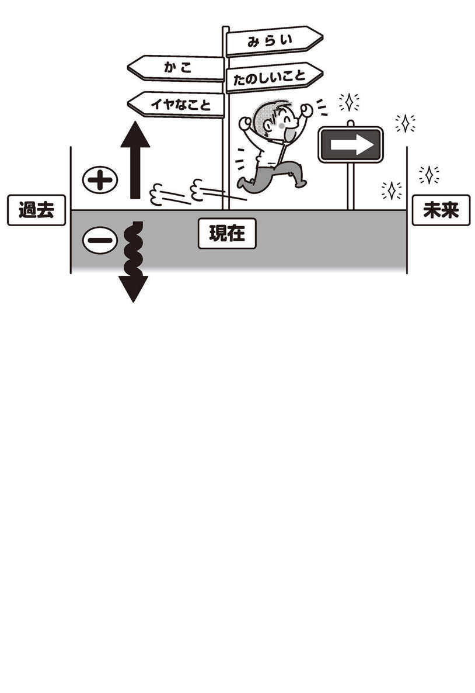
一方的に怒られたりして気分が悪い時に「なんで自分が怒られたんだろう？」と自分に質問しても意味がありません。それよりは「次回から怒られないように注意しよう」とか、「あの人は今日は機嫌が悪かったのかな」とか「あの人はいつも怒ってるけど、ああいう人だよね」と、自分がスッキリする、あるいは納得のできる答えを自分から積極的に探しだしてみましょう。
私の好きな言葉のひとつに「失敗はない、学びがある」という言葉があります。もちろん失敗のない人生なんてありません。何かにチャレンジすれば失敗することもあります。ですが、その起こったできごとを失敗と捉えるのではなく、ただ失敗したという現実を理解し、そしてそこから「何が学べただろう」と考えることです。
今日のごはんを買って帰る、人と会話をしてみるというような小さなチャレンジから、就職してみる、新しい仕事をしてみる、結婚してみるというような大きなチャレンジまでたくさんあります。
でも、どんなことでも初めからすべてうまくいくわけはないのです。絶対に失敗したくないのであれば、唯一できることは、決して何にもチャレンジしないことです。でも、それでは日常の生活ですらできなくなってしまうでしょう。
まずは「失敗するのは当たり前」という前提を持ってください。しかし失敗を失敗のままに終わらせてしまえば、それは本当に失敗なのです。そうではなく、失敗した時に「よし、次はどうやったらうまくいくかな？」と考え、これからの成功のためにどうすればよいのかという答えを出すことが、成功へつながる道となるのです。
トーマス・エジソンも電球を作り上げるまでに何百回、何千回の試行錯誤を繰り返しながら、結果的に明るく光り、エネルギー変換効率の高い電球を作り上げたのと同じです。また、世界最高峰の頭脳を集めたＮＡＳＡでさえも何度かロケットを爆発させていますし、スペースシャトル計画も何度か失敗に終わっています。失敗というものは誰にでもあるのですから、それを責めても意味がありません。「次にどのようにすればうまくいくか」を考えるのが正しい思考なのです。
失敗した時にいつまでもグズグズ失敗した時のことにフォーカスするのではなく、すぐさま「次はどうやったら成功するかな」というＮＥＸＴ思考を身につけ、成功することにフォーカスを変えてみましょう。そうすれば「失敗は成功のもと」となるのです。
囲炉裏の前に座り食事をしていると、だんだんと穏やかな気持になってきた。なんだか先生とはずいぶん前からの知り合いのような気がしてきた。
ただ静かな時間が過ぎていった。
「思い出していない時は、どんな時ですか？」唐突に先生からの質問だった。
「思い出していない時ですか？」僕は少しとまどった。
なぜなら四六時中思い出しては、イヤな記憶に苦しめられていたので、自分でも思い出していない時などないような気がしていたからだ。
「思い出していない時はありませんね。いつもいつも思い出しています」僕は答えた。
「あそこに時計があります」先生は後ろの壁を指差した。「すっかり眼が悪くなって、時間もわからなくなってしまいました。今、何時ですか？」先生は笑いながら言った。
「今は６時25分です」僕は答えた。
辺りはすっかり暗くなり、怖いくらいに外からは何の物音も聴こえなかった。
「時間を教えてくれてありがとう」先生は僕の顔を見ながら言った。「ところで、今、時計の時間を教えてくれている時にイヤなことを思い出していましたか？」
なんだかやり込められたような気がして居心地が悪かった。たしかに今、この瞬間はイヤなことは思い出していなかったからだ。でも、僕が聞きたいのはそういうことではない。記憶を消す方法なのだ。
「たしかにそうですね。でも僕が聞きたいのは記憶の消し方なのです」僕は正直に話した。
先生は軽く何度かうなずきながら教えてくれた。
「そうですね。これも記憶を消すために大切なことなのです」それから先生は話を続けた。
「こんな話を聴いたことがあります。昔、ある大学生の男の子が、自分の理想とも言えるような大好きな女の子と付き合っていたのですが、あるキッカケで大失恋をしてしまったそうなのです。
その人はなぜフラれてしまったのか理解できず、明けても暮れてもそのことばかり考えていました。その時の状況や言われた言葉や彼女の顔が、勝手に脳裏に浮かんでくる。
納得のいかない悔しさと怒りと悲しみに支配され、何度も何度も彼女の言葉や表情を思い浮かべるたびに、打ちのめされるような気持ちで過ごしていました。
でも、その人は、自分がその悔しさから解放されて、楽に過ごせている瞬間があるのを発見しました。
それは、試験が迫ったある時です。
勉強に集中している時だけは、そのフラれた記憶から解放され心がホッとできたのです。
それ以来、彼は勉強に集中し続けました。勉強し続けていれば、心が救われたのです。
のちに彼は博士号を取得し、ある分野での第一人者となり、誰もが認める大きな業績を収めたそうです」
なるほど、と僕は思った。自分も同じように、いつもいつも思い出しては悔しさと怒りがこみ上げてくるが、たしかに24時間、ずっと思い出しているわけではない。仕事が立て込んで納期に間に合わない時は仕事に集中することができている。もしかしたら、その他にも思い出していない時はあるかもしれない。
「たしかにそうですね、僕も思い出していない時はあります。しかし先生、それが記憶を消すこととどんな関係があるのでしょうか」
「記憶は、思い出さなければ徐々に消えていくものなのです」先生は穏やかな笑顔で静かに答えた。
僕はがっかりした。この思い出したくもない記憶を一瞬で消せるような、何か魔法のようなものを期待していたからだ。そのような方法は本当にないのだろうか。僕はそのことを思い切って質問した。
「なにか魔法みたいに、記憶を一瞬にしてパッと消せる方法はないのでしょうか。たとえば催眠術をかけて、いらない記憶だけを消去するような」やっとこの質問ができた。僕が本当に聞きたいのはそのテクニックなのだ。
先生は少し笑いながら答えた。
「残念ながら、一瞬にして記憶をなくすことはできないんですよ」
まだ、僕は納得ができなかった。
「でも先生、僕はテレビの催眠術ショーで見たことがあります。出演者の記憶を消して、その人が自分が誰だかわからなくなっているという内容でした」昔、テレビで見た催眠術の番組の話をした。
「なるほど、そうですか」先生はにこやかな笑顔で話を続けた。「その後、その人はずっと自分が誰だかわからなくなってしまっているのでしょうか」
「いえ。ほかの番組には普通に出演していました」僕は答えた。
「そうなのです。催眠術などでほんのわずかな時間、過去の記憶を思い出せないという状況を作り出すことは可能です。ですが、それは短い時間だけなのです」
「なぜですか？」僕は疑問をぶつけてみた。
「忘れたと思い込まされているだけで、記憶がなくなったわけではないのです。普段の生活に戻れば、また自然と思い出すものなのです」先生は話を続けた。
「もし、本当にそんなことが可能で、誰かの記憶を奪い去ることができるのだとしたら、社会はとても混乱するでしょう。お金を貸したことを忘れさせてしまったりすることもできますからね。離婚問題もなくなるかもしれません。それに精神科医は医師免許を取るために勉強するのではなく、催眠術を覚えてしまったほうが患者さんにとっては有益でしょうね」先生は笑いながら答えた。
僕は少し納得した。たしかにそうだ。テレビ番組の中ではそういうことはあっても、現実社会では誰かに記憶を消されてしまって困っているとか、そんな話は聞いたことがない。
「では、記憶を消す方法はないんですか？」僕は少し落胆しながら質問してみた。
「いえ、そんなことはありません。消す方法はありますよ。ただ、あなたが期待していた方法とは少し違うだけです」先生は答えた。「魔法みたいに一瞬では消すことはできませんが、徐々に記憶が薄らいで、最終的には消えていきます」
「そうですか」僕は落胆を隠せなかった。「それは気の長い話ですね」
「ええ、そうですね。少し時間はかかります」先生は続けた。「でも、あなたは何年も何年もその記憶に苦しめられています。その記憶がほんの数週間で薄らいでいき、ほんの数か月で忘れてしまえるとしたらどうでしょうか」
「そうですね。今の状態がこのままずっと続くよりは幾分ましですね」僕は答えた。
「あなたがどのくらい上手に自分の記憶をコントロールできるかわかりませんが、取り組んでみますか？」先生は僕の顔を見ながら、ほほ笑んだ。
「はい、やってみます」僕はどんなことに取り組めばいいのだろう。話を聞いてから、自分にできるかどうか判断すればいい。とりあえず話を聞いてみようという気になった。
「記憶を消すためにいろんなエクササイズやワークがあります。なかにはユニークなものや少しおかしなものもありますが、何かのヒントになることもあるでしょうから、ひととおり学んでください。そのなかから自分にいちばん合った方法を使えばいいんです」先生は言った。
そして、僕は〝イヤな記憶を消す方法〟を、やっと教えてもらえることになった。
記憶を消すテクニック
思い出していないのは、どんな時？
イヤな記憶に付きまとわれていると、ずっと、そのイヤなことばかりを思い出しているような気がしますが、実はそうではありません。24時間、３６５日、ずっとイヤな記憶だけを思い出しているわけではないのです。
原因志向の場合は「どんな時にそれを思い出すのですか？」と尋ねられると思います。しかし解決志向の場合は少し違った質問になります。解決に向けて話し合う場合は「どんな時には、それは思い出していないのでしょうか？」という質問になります。
外国の映画を見ている時に、よく「なんにでも例外はある」というセリフを耳にします。どんなことでも例外はあるのです。いつもいつもそのイヤな記憶にとらわれて抜け出せないような気がしていますが、やはりここでも例外はあるのです。
少し考えてみましょう。
思い出したくもないイヤな記憶をついつい思い出してしまうのはいつでしょうか。たいていは、外部情報が遮断された時なのです。いちばん多いのは寝る時のベッドの中です。視覚情報、聴覚情報が遮断されるといつものように脳が暴走し始めます。あの思い出したくもない記憶の上映会が、頭の中でグルグル始まってしまうのです。考えたくもないのに、考えたって仕方がないとわかっているのに、どうしてもグルグルしてしまいます。
その他には、トイレの中やお風呂の中などが多いと思います。もちろん、直近にイヤなことがあったりすると四六時中思い出してしまうこともあるでしょうが、それは外部情報が極端に少なくなる状況になると、さらに多くなる傾向にあると思います。
それ以外では、単純作業をしている時もよく思い出すと思います。お皿を洗っている時や、顔を洗っている時、歯を磨いている時、髪をかわかしている時、草むしりをしている時、単純なゲームをしている時など、あまり頭を使わない単純作業をしている時に思い出すことが多いのではないでしょうか。
では逆に、思い出していない時はいつでしょうか。
映画を見ている時、テレビを見ている時、興味のある本を読んでいる時（たとえば今はどうですか？）、戦略的なゲームに集中している時、普段とは違うメニューの料理を作っている時、お買い物の最中、スポーツが好きな方は、スポーツに集中している時などではないでしょうか。
たとえば仲の良い友達とテニスやスキーをして楽しんでいる最中などには、まったく思い出していなかったりします。
何かに一生懸命没頭している時や、まったく新しいことにチャレンジしている最中など、外部から新しい情報が脳の中に入ってきている時は意外と思い出していないこともあるのです。
少しでもイヤな記憶と付き合わないためには、まったく新しいことにチャレンジしてみたり、新しいお店に行ってみたり、普段は行かない博物館や美術館など、自分が興味のある場所に行ってみるのもよいでしょう。たったそれだけのことでもイヤなことを考えている時間を減らすことができます。
この、思い出している時と思い出していない時の違いがおわかりいただけたでしょうか。つまり、イヤな記憶を思い出している時は、実は脳がヒマなんです。脳はヒマになると勝手に暴走してしまう器官なのです。
脳がヒマにならないよう、新しいことを考えたり、自分のための興味ある分野の勉強に没頭したりと、未来のクリエイティブなことのために私たちは自分の脳を使ったほうが、イヤなことを思い出しながら過ごすよりも何十倍もより良い人生が過ごせるのです。
１分だけ短くしてみよう
焦って最初から記憶を完全に消去しようとすると、なかなかうまくいきません。そこでハードルを下げて考えてみましょう。
一気に完全消去ができなかったとしても、１分くらいなら短くすることはできると思います。もしあなたが１分間だけだったとしてもイヤな記憶を短くできたとしたら、それはあなたが主体性を持って能動的に記憶をコントロールできたということになります。最初はたった１分であったとしても、自分の力でコントロールできるということは、思い出さない時間を長くすることも可能なのです。
徐々に思い出さない時間を長くしていけば、必ず記憶は薄くなり、やがては消えていくでしょう。難しく考えずに気軽にチャレンジしてみてください。
＊エクササイズ① 替え歌を作ってみる
みなさんも子供のころ、替え歌を作って遊んだ経験があると思います。大人になって考えてみるとくだらないことのように思いますが、替え歌を作ることでもイヤな記憶を短くすることはできますので、ぜひこのエクササイズに取り組んでみましょう。
みなさんは「ドレミの歌」をご存じでしょうか。ドはドーナツのド♪というあの曲です。ほとんどの方が子供のころに歌ったことがあると思います。この単純な歌の替え歌を作ってみましょう。ドは○○○のド♪ レは○○○のレ♪ というふうに、自分の気に入った言葉を当てはめながら歌ってみましょう。
ドはドミニカ共和国のド、レはレンコンのレなど、なんでもかまいません。飽きてきたら、少し難しくしてすべて人名で統一とか、国名で統一とか、鍋料理に入れる食材で統一とか、自分なりに工夫して遊んでみてください。
＊エクササイズ② 呪文を唱える
替え歌は楽しいと思いますので、ぜひ取り組んでみていただきたいのですが、なかなか歌う気分になれない方にとってはハードルが高いので、そんな時はあなただけのオリジナルの呪文を考えてみましょう。ドラゴンクエストなんかのロールプレイングゲームに出てきましたよね。あんな感じの呪文で大丈夫です。意味なんてなくてもかまいません。
たとえば「アブドルダムラル・オムニスノムニス・ベルエスホリマク」でも「もう過去のことだ。どうでもいい」でも「デイブリーロスノコウニンハ・サミーヘイガー」でも「ドレイクの方程式はわれわれとコンタクトする可能性のある地球外文明の数」でもなんでもよいのです。ちょっと長めの呪文を自分で作って唱えてみましょう。
手塚治虫さんの漫画「ブッダ」では、修行中のブッダをたぶらかそうとする悪魔に向かって「マーラよ、去れ！」と一喝する場面がありますが、そのように自分の中の悪魔のような記憶に向かって「マーラよ、去れ！」と伝えてもよいと思います。
インドの方の名前は日本人から見たらそれだけで呪文のように感じます。たとえば「きっと、うまくいく」という映画の主人公のフルネームは「ランチョルダース・シャマルダース・チャンチャル」。さぁ、みなさんも覚えてください。そして自分なりの抑揚をつけながら唱えてみましょう。「ランチョルダース・シャマルダース・チャンチャル」。
くだらない方法のように思えますが、この名前を唱えている間だけでもイヤな記憶から少しだけ離れることができると思います。イヤな記憶がフラッシュバックしてきそうな時は、すかさず唱えてみましょう。
サブモダリティを変化させる
私たちの記憶は五感から取り入れた情報をもとに形づくられています。見る・聞く・嗅ぐ・味わう・皮膚感覚を通して得られた情報が脳の中で再合成され、これらの構成要素を組み合わせて記憶を作っています。
これらの要素の組み合わせを変えて、記憶を再合成することも可能です。それがサブモダリティ・チェンジです。サブモダリティとは記憶のイメージに従属する要素のことです。記憶の中のできごととともにある、漠然とした感覚や雰囲気のことだと思ってください。これを変化させることにより、イヤなイメージを遠ざけることができるようになります。
私たちが世の中を認知する時に80％以上を視覚に頼っているという研究データがあります。つまり多くの人は、できごとを映像として記憶しているのです。この映像のイメージを少しいじってみようという試みです。
さっそく取りかかってみましょう。
あなたの頭の中にあるイヤな記憶を思い浮かべてみてください。それはどのような情景でしょうか。白黒でしょうか、それともフルカラーでしょうか。写真のように一瞬を切り取ったような特定の場面の静止画でしょうか、それとも映画のように動いている動画でしょうか。
まずは自分にとってどのサブモダリティを変化させるのが有効なのかを知るために、その構成要素のひとつひとつを取り上げて変化させてみましょう。ひとつの構成要素を変化させた後は、いったん、またもとの映像に戻してから次の構成要素を変化させてください。
映像のサブモダリティを変化させる
色調
... フルカラーから白黒映像にしてみましょう。その白黒映像に赤いフィルターをかけてみてください。次に青いフィルターをかけてみてください。
鮮明度
... その映像を明るくしていきましょう。ハレーションが起こって画面が真っ白になるくらいまで鮮明度を上げてみてください。次に、鮮明度を落として古ぼけた映像にしてみましょう。
コントラスト
... コントラストをくっきりさせたり、輪郭線が曖昧になるまでぼかしてみましょう。
動き
... その映像が動画であれば、核心部分以外のところで止めてみてください。中途半端なところで止めてみましょう。慣れてきたら、映像が始まる前に止めてみましょう。
スピード
... 超スローモーションにしてみましょう。ゆっくりとした動きです。次に超早回しにしてみましょう。一瞬にして終わらせます。
縦横比
... 縦にびよーんと伸ばしてください。すべてが縦長になります。次に、横にびよーんと伸ばしてください。
距離
... 超アップにしてください。映像がなんだかわからなくなるくらいに寄ってみましょう。今度は逆にその映像を遠ざけてください。どこまでも遠くに小さく小さくなるまで、その映像を遠くに追いやってみましょう。
枠
... 枠を付け足してみてください。その映像はテレビの枠の中のできごとです。スマートフォンの枠の中の動画でもいいですよ。
阻害映像
... あなたの記憶している映像よりもさらに前面に10匹の猫が現れて、映像の前をうろちょろしているので、画面が見えません。あくびをしている猫や飛び跳ねている猫をたくさん呼んでください。
モザイク
... 画面全体にモザイクをかけてみてください。モザイクの向こうでは何かの映像が動いているようですが、認識できません。
ぼかす
... ピントの合っていないボケボケの映像にしてください。
アニメ化
... ３次元のリアルなできごとではなく、２次元のアニメの映像にしてみましょう。
ブラックアウト
... 画面をシャットダウンして、真っ暗にしてください。
こういうふうに、記憶のイメージを変化させることはさほど難しいことではありません。リアルに思い出して腹が立つような記憶と付き合い続ける必要はないのです。脳のコントローロの方法を知って、自分の力でコントロールできるようになることが大切です。
このように映像も変えられますが、音声も同じように変えられます。たとえば電話などで言われたイヤな言葉の記憶の場合は、映像を変化させるより音声を変化させてしまったほうが効果がありますので、音声のサブモダリティも変えていきましょう。
音声のサブモダリティを変化させる
ノイズ
... ザァーっという大きめのノイズを足してみましょう。相手の声が聞き取れないくらいのノイズを足してみてください。
騒音
... すごくうるさい場所や人が集まる場所をイメージしてみてください。すごく混んでいる駅のホームとかで、相手の声が聞き取れないくらいの騒音を付け足してみましょう。超満員のライブ会場でもいいですよ。
速度
... 超スローにしてください。相手の声が間延びしてバカっぽくなるくらいゆっくりのスピードで再生しましょう。次に、相手が何をしゃべっているのかわからなくなるくらい、超早回しで再生してください。
トーン
... 思いっきり低いトーンにしてください。次にハイトーンにしてください。ハイトーンをどんどん上げてモスキート音まで上げていけば聞こえなくなります。
エコー
... ボワンボワンと聞き取れないくらいの大きめのエコーをかけてみましょう。館内放送や花火大会の会場の音声はとても聞き取りづらいものです。
ディレイ
... 相手の口の動きから１テンポ遅れて声が聞こえてきます。
〝おや？ 声が遅れて聞こえてくるよ？〟という腹話術みたいですね。
途切れる
... 途切れ途切れにしか聞こえないので、結局なにを言っているのか聞き取れない。山奥で使う携帯電話はこんな感じです。
阻害音声
... 好きな歌を大音量で流す。
無音
... 音声がなくなった状態。映像はあっても音声は何も聞こえない。音声を消したテレビみたいにしてみましょう。
このように、音声も変化させることができます。
以前「名探偵モンク」という海外コメディドラマを見ていた時にこういう場面がありました。探偵のモンクが話をしようとすると、タイミングぴったりに近くの工事現場の機械が騒音を立てる。モンクが話をあきらめると機械も止まる。また話し始めようとすると、また騒音を立てる。結局、モンクは話ができない状況に追い込まれるというものでした。
これと同じように、イヤな記憶の中の相手が話し始める前に何かで邪魔することは可能です。思い出すだけで不快になる言葉を何度も思い出すのではなく、思い出さないように積極的に阻害しましょう。
この他にもサブモダリティには温度や湿度や味覚や皮膚感覚などがありますが、ほとんどの記憶の場合は映像と音を変化させることによって対処できると思いますので、まずはこの２つから試してみてください。
慣れてきたら、いくつかの要素を組み合わせてみましょう。たとえば、映像を白黒にしてぼかしをかけ、遠ざけてしまいながら、ノイズをかけて相手の音声は聞き取れないという状態を作ってみましょう。
遠くに追いやる
私たちは人それぞれ記憶の保存のしかたが違っています。ある人はイヤな記憶を思い出すときにフルカラーの動画で、距離的にも目の前で大きな映像として保存している人もいるでしょう。そして楽しい記憶は写真のように止まっていて白黒でかすれていて小さく思い浮かべる人もいるでしょう。
これを逆にしてみましょう。楽しい動画をフルカラーで動画で近くで見るように、そして思い出したくないイヤな記憶のイメージを白黒にして、自分からはずっと遠くに置いてしまいましょう。そうすると、これまでとは違った感じ方になると思います。
目の前でリアルに展開されると圧迫感もありなかなか離れられませんが、遠くに追いやってしまえば、どこか対岸の火事のように他人事のように思えてくるでしょう。
友人が大切にしていたギターを傷つけてしまった
梶原さん（男性・24歳）は見るからに真面目そうで、静かで穏やかな口調が印象的だった。
ひとつひとつの言葉を丁寧に選びながらゆっくりと話を聴かせてくれた。
高校生のころ、学園祭にロックバンドとして参加することになり、同じクラスの友人宅で曲の練習をしていた時に友人の大切にしていたギターを傷つけてしまった。その時に言われた言葉が頭の中で何度もリフレインしてきて、今でも胸が苦しくなり身体から血の気が引くような脱力感と緊張に襲われるらしい。今ではその友人とは疎遠になり、会うことはないとのことだった。
「どんなことがあったんでしょうか？」私は尋ねた。
「昔、友人のギターを傷つけてしまったことがあったんです。当時、学校でいじめにあっていたのですが、その友人だけはいつも笑顔で気さくに話しかけてくれ、いつも僕の味方をしてくれていました。みんなに無視されていた時も優しく接してくれていたんです」
「ええ」
「ある時、その友人がバンドに誘ってくれました。なんとかその友人に恩返しがしたかったので、参加することにしました」
「なるほど」
「ある日、その友人宅で学園祭で発表する曲の練習をしていた時に、ちょっとつまずいて友人の大切にしていたギターを倒してしまったんです」
「うん」
「それで、ギターの倒れる位置が悪く、ボディの目立つところにへこみができてしまったんです」
「うん」
「その時に友人が睨みつけるような目でこっちを見て『信じらんねぇ!!』と大声で怒鳴ったんです」
「なるほど、そうですか」
「その時の状況や、その友人から言われた『信じらんねぇ!!』という言葉が頭の中にこびりつき、頭の中で何度も繰り返されてとても苦しいんです」
「なるほど」
「それを思い出すだけで、今でも身体から血の気が引いて、目の前が真っ白になるような感覚や脱力感に襲われます」
「そうなんだ。それは、苦しいですね」
「はい」
「その感覚ですが、言葉にすると罪悪感が近いでしょうか？」私は尋ねた。
「ええ、そうですね。罪悪感だと思います」
「その後のことは覚えていますか？ たとえば、それっきり口もきいてくれなくなったりとか」
「とにかく何度も謝りました。もし友人が許してくれるのなら土下座をしてもかまわないと思ったほどです。もちろん修理代も払いました」
「なるほど。友人との関係はどうなりましたか？」
「その後のことはあまり覚えていないのですが、１週間くらいはいろいろ言われていましたが、その後は普通に今までと変わらず優しく接してくれるようになりました」
「そうですか。それはよかったです」
「でも、やっぱり、友人の形相と言葉が頭に浮かんできます」
「そうですね。でも、もうすでに過去のことですし、ちゃんと謝罪もして修理代も支払ったのですから、いつまでも罪悪感で自分を苦しめる必要はないと思います」
「でも、忘れてしまっていいんでしょうか？」梶原さんは少し躊躇していた。
「もう過去のことですし、自分を責めていても何も変わりません。もしその時に戻れて、ギターを倒さなかったことができるのであれば、思い出して自分を責めていてもかまわないのですが」
「ええ。取り返しのつかないことをしてしまいました」
「そうですね。たしかに取り返しのつかないことです。でも、あなたは何年間も頭の中で自分を責め続けてきました。もう十分に贖罪したと思うのですが」
「本当に、いいんでしょうか」
「もう、十分だと思いますよ。自分を許してあげませんか？」
「そうですね、いつまでも考えていてもしょうがないですよね」と言いながら、梶原さんは軽く何度かうなずきながら答えた。本当は自分でもわかっているようだった。
「さぁ、これからその記憶と決別しましょう。軽く目を閉じてください。そしてそのいつも思い出すイヤな記憶をイメージしてみてください」
梶原さんは軽く目を閉じ、何かを思い出したように眉間にしわを寄せた。
「まず、その友人に言われた言葉を聞かないようにしましょう。音声を消してください。その友人が口パクでなにかしゃべっているけど、あなたはそれが聞こえません」
少しだけ梶原さんの表情がゆるんだ。私は続けた。
「その友人の顔を白黒のモノトーンにしてください。それから古ぼけた写真のようにぼんやりと輪郭がはっきりしないようにぼかしていきましょう。ハイトーンを上げて、白っぽくしていきましょう。それからそのイメージを自分から遠ざけてください。１メートル、３メートル、５メートルとどんどん遠くに追いやってください。10メートル、20メートル、30メートル。その映像はどんどん小さくなってスーッと遠くに消えていきます」
一呼吸おいて、私は尋ねた。「できましたか？」
梶原さんはゆっくりと、軽くうなずいた。
「梶原さん、自分に言い聞かせてください。『謝罪はしたし、修理代も支払った。失敗することや間違うことは誰にでもある。気にしなくていいんだよ』と自分に伝えてあげましょう」
梶原さんの口元に少し力が入った。泣きたい気持ちを我慢するかのように奥歯を噛みしめていた。
ちょっと間を空けてから、目を開けるように伝えた。
「いかがでしたか？」
「そうですね、不思議な気分です。心が軽くなっています」
それから少し話をして、その日のセッションを終えた。
後日、梶原さんからメールが届いた。梶原さんらしくとても丁寧な文章で書いてあった。その日の帰りには今までにないくらい心がとても軽かったことや、今でも時々、当時のことを軽く思い出すことはあるけれど、以前みたいに身体から血の気が引いたり脱力したりすることもなく、ただの客観的なイメージとなっていること、思い出す回数はどんどん減っていて、思い出さない日のほうが増えてきたことなどが書いてあった。
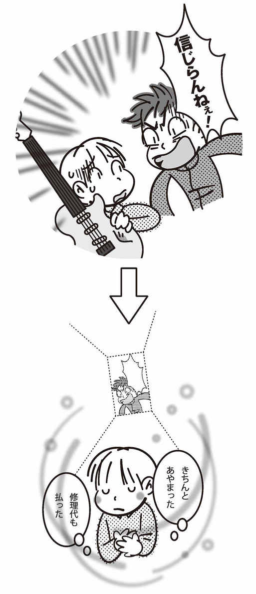
【フォーカスを変えるエクササイズ】
フォーカスを変えてみよう
さて、今、あなたがいる部屋の右を見てみましょう。そうすると右にある風景が見えます。左を見てみましょう。そうすると、左にある風景が見えてきます。このように、どこにフォーカスする（焦点を当てる）のかで見える景色は違ってくるのです。
実は頭の中でも同じことができます。あなたがとらわれているイヤな記憶のイメージから、まったく違う別のイメージへとフォーカスを変えてみましょう。
イヤなこと、苦しいこと、つらいことを考えれば心は重苦しくなりますが、そのイヤなことをずっと考え続ける必要はありません。あなた自身が意識してどのイメージに焦点を合わせるかを選択してよいのです。もちろん最初は慣れていないので難しいかもしれませんが、何度も繰り返し訓練することで必ずできるようになります。
＊過去の楽しかったことにフォーカスする
まずは最初のエクササイズです。過去の楽しかった場面を思い浮かべてみましょう。
友だちとスポーツをしたり釣りに行ったり野原で走り回った時など、どんなことでもかまいません。笑い合ったり新しい発見をした時などのことを思い浮かべてみてください。なかなか思い出せないかもしれませんが、時間をかけて探してみましょう。目を閉じたほうが思い出しやすいかもしれません。「あの時は楽しかったなぁ！」という場面を探ってみましょう。
今、実際にやってみてください。
次に、過去にほめられたことを思い出してみましょう。
小学生の時にほめられたこと。両親でも学校の先生からでも友だちからでもかまいません。ほめられて嬉しかったことを探してみましょう。友だちと遊んでいてほめられたり、体育の時間や音楽、図工の時間にほめられたりしたことがあったのではないでしょうか。朗読が上手だったり、何かの発表会でほめられたり、どんなことでもよいので何かひとつ思い出してみてください。
思い出したら、それをリアルに追体験してみましょう。ほめてくれた人の顔、その人の話し方、その人の声、その人から言われた言葉をリアルに思い出して、もう一度じっくり味わってみてください。
＊未来のチャレンジしてみたいことにフォーカスする
次のエクササイズです。今度は未来のことにフォーカスしてみましょう。
何か好きなスポーツはありますか？ 今までやってみたかったけどまだチャレンジしていないスポーツでもかまいません。サッカーでもスイミングでもテニスでもサーフィンでもスノーボードでもバレーボールでもあなたが好きなスポーツを選んでください。それを、すごく上手に気持ちよくやっている自分を想像してみましょう。自分でも不思議なくらいに身体が自由に動き、疲れることもなく楽しめている。周りのみんながあなたの姿に見とれ、口々に「スゴイ！」とほめてくれているところをイメージしてみてください。
音楽が得意な人は、自分が上手に楽器を演奏しているところをイメージしてみましょう。憧れのステージに立ち、自分の担当の楽器を上手に奏でることができていて、ソロになりスポットライトがあたっている時でも、まったく緊張せずにリラックスしながらとても上手に音楽を奏でています。観衆はあなたの奏でる音に釘づけです。その時のホールの広さはどのくらいでしょうか。観客は何人くらいいるのでしょうか。あなたが奏でる音のひとつひとつを丁寧に聴いてみましょう。
絵や学業や仕事上のことでもかまいません。何かに取り組んで、それが大成功している自分の姿をイメージして、それを十分に体感しながら味わってみてください。
脳は未来のクリエイティブのために使う
メンタルブロックを外して、自由な発想で妄想してみましょう。「どうせ、そんなの無理に決まってる」と考えると夢はしぼんでいきます。妄想でかまわないのですから、自分に制限をかける必要はありません。本当に自由だとしたら、何でも可能だとしたら、経済的にも時間的にも能力的にも何もあなたを制限するものがなかったとしたら、どんな自分の夢を実現してみたいでしょうか。
＊海外旅行に行くとしたら、どこに行く？
今から２ヶ月後、海外旅行に行くとしたらどんな所に行ってみたいでしょうか。
暖かい南の島はどうですか？ ヤシの木の木陰でのんびりと海を眺めながら、綺麗な色のカクテルを飲んで、ゆ～ったりリラックス。誰と行きましょう。家族ですか？ 友だちと？ 大好きな人とふたりきりでラブラブ旅行もいいですよね。ハワイでもセブ島でもバリ島でもモルディヴでもセイシェル島でもニューカレドニアでもマタヌイ島でもマニャガハ島でも、どこにだって好きな所に行けます。
ヨーロッパの街並みが見たい。ドイツの古城巡りをしてみたい。スイスでスキー三昧もいいですね。トスカーナの青い空を見にいってもいいですし、オランダのチューリップ畑も見てみたい。どんな服を持って行きますか？ 食事は何にしましょうか。現地の人たちと交流できるといいですよね。あなたのいちばん行ってみたい旅行先を決めてみましょう。
どこにでも自由に行けます。その時に何を準備すればいいでしょうか。パスポートと着替えと現金。トラベラーズ・チェックはどこで手に入れますか？ どこの旅行会社にしましょうか。そんなことを妄想していると楽しいですよね。まったくの創作でかまいませんので、これから起こる楽しい未来のことにフォーカスしてみましょう。
＊10億円が当たったら、何に使う？
今、あなたの手元に10億円の現金があったとします。しかもそれは自由に使ってよいお金です。ただし、ひとつだけルールがあります。そのお金は１ヶ月以内にすべて使いきってしまわなければなりませんので、貯金することはできません。
あなたは何を買いたいでしょうか。何かの習いごとを始めてもいいですし、世界一周でもかまいません。理想の家を建てても、田舎に別荘を買っても、自社ビルを買ってもいいですよ。高級車を手に入れてもいいですし、海外留学でもボランティアでも自由に使ってください。
そこで出てきた答えは、本来あなたが手に入れたいものに近い答えだと思います。実際に10億円を手元にお持ちの方は少ないと思いますが、妄想するだけなら自由ですので、毎日「10億円あったら」と考えながら、自由でリッチな生活を考えてみましょう。
人生はお金がすべてではありませんが、お金があればできることは確実に増え、自由な時間も増えます。やりたいことが自由にできるようになります。昔、お世話になった人に恩返しをしてもいいですよ。本当に10億円あったら、自然と鬱々している時間は減ると思います。
今は妄想だけかもしれませんが、もしかしたら未来には実現できるかもしれませんので、今のうちから一生懸命、妄想しながら楽しんでみてください。
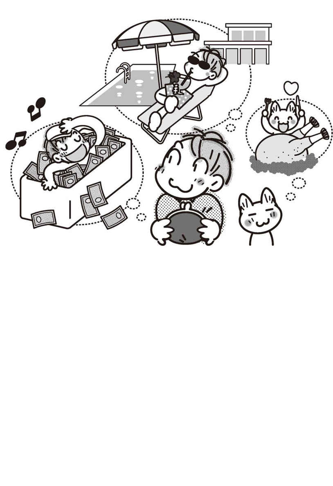
有益な未来にフォーカスしよう
次に、実際の自分が成し遂げたいことにフォーカスしてみましょう。
あなたは今、生きています。好むと好まざるとにかかわらず未来へ向かって人生を進めるしかありませんので、過去のイヤなイメージに振り回されているよりは、新しい未来の自分のために脳を使ったほうが、あなたの人生にとっては有益なのです。あなたの大切な脳を使って、わざわざイヤなことを考える必要はありません。これからの未来のクリエイティブなことのために使ってみましょう。
たとえばあなたが何かのお店を開業したいとします。飲食店でも雑貨屋さんでもパン屋さんでもお花屋さんでも、マッサージ店でもペットショップでもかまいません。資金も能力も資格も関係なく、何でも始められるとしたら、どんなお店にするでしょうか。資金も関係ないのですから、こじんまりと考える必要はありません。最高のショップをイメージしてみましょう。
まずは、そのお店の屋号を考えてみましょう。お店の名前は何にしますか？ わかりやすい名前でもカッコイイ名前でも、自分のお店なのですから自由につけてみてください。
そのお店はどこで開業するのでしょう。自宅からすぐ近くでもいいですし、駅前の一等地でも郊外の広い駐車場のあるお店でもかまいません。
お店の内装はどうしましょうか。洗練されたシンプルなトーンでまとめますか？ それともバリ島で仕入れた家具を置いて緑をいっぱいおいて暖かい雰囲気にしますか？ 高級店を目指してもいいですし、気軽にはいれるような親しみやすい雰囲気のお店にしてもいいでしょう。
どんな壁の色にしますか？ 明るい感じにするのか、シックな感じにするのかも考えてみましょう。床は大理石ですか？ それとも木の床ですか？ コンクリート？ できるだけリアルにイメージしてみましょう。
家具や食器類はどのようなものを揃えますか？ お店の広さはどのくらいでしょうか。お客様は何人くらい入れそうですか。その広さに対して従業員の数は何人くらいでしょうか。従業員はどんな方たちでしょうか。男性でしょうか？ 女性でしょうか？ あなたは従業員の方々にどんな接し方をしているでしょうか。いばってますか？ それとも笑顔で優しく接することができているでしょうか。
どんな客層ですか？ お客様は１日何人くらい来てくださるのでしょうか。そのお店は１日の売上はどのくらいあるのでしょうか。あなたのお店独自のお客様を喜ばせるためのサービスはどんなものがあるのでしょうか。お客様の一人ひとりに喜んでもらって笑顔で帰っていただくためのサービスを考えてみましょう。
そんなことを考えているほうが楽しくありませんか？
楽しいワクワクするイメージへとフォーカスを変えてみましょう。
私の知り合いにサーフショップのオーナーの方がいます。その方は宮崎で開業されているのですが、宮崎出身ではありません。そこでその方になぜ宮崎でショップを開業したのかを尋ねてみました。
その方の答えはシンプルでした。
「日本全国、いろいろな海で波に乗ってみたけど、ここの波がいちばん良かったから」だそうです。
こんなシンプルな理由で自由に生きていくこともできるんですね。実際にその方は、早起きするとまず波をチェックして、それから近くの漁港まで車で行き、捕れたてで新鮮な魚を買い朝食を食べて一休み。日中でもフラフラと犬の散歩に行ったり、散策したりと自由に生活しています。
先ほどイメージしてもらった、自分の理想のお店を実現するとしたら、まだまだ考えることはたくさんあります。仕入れ方法や経理関係はどうするのか。何時から何時まで営業するのか。休日は何曜日にするのか。そういったことを考えていたほうが、自分の人生には格段に有益なのです。
お店だけに限らず、会社の運営に興味があればそのことを考えてみてもいいでしょう。ＩＴ系の企業を立ち上げるのか、デザイン会社にするのか、金融系なのか、事務系なのか。何でもかまいません。得意分野で大成功するとしたらどんな道があるのかを考えてみましょう。
先ほどのお店と同じように、細かく想像してみてください。
＊新しいことにチャレンジする
実際に何か新しいことにチャレンジしてみましょう。小説を書いたり、ピアノを習い始めたりしてもよいと思います。これまで、ずっとチャレンジしてみたかったけど、まだ取りかかってないことは何でしょうか。山登りでも英語の勉強でも野菜ソムリエの資格取得でもかまいません。
たとえば小説やマンガを描くのが好きだったとしたら、どんな作品を描いてみたいでしょうか。すでにベストセラーになることが決定していたとして、数年後には映画化もされ、知らない人はいないというような大ベストセラーになるという結果が先にわかっていたとしたら、あなたはどんな作品を世の中に送り出してみたいでしょうか。ベストセラー作家になり、好きな作品だけを作り続けながら自由に生きていけるとしたら、毎日どんな気分で過ごせますか？
人生を半ばあきらめていると、「そんなの無理に決まってる」「夢中になれることなんて何もない」と思ってしまうかもしれません。
でも、よく考えてみてください。
もしかしたら、あなたは小さい時に人生をあきらめたのかもしれません。でも、あきらめる前のあなたも必ずいたのです。おぎゃーと生まれた瞬間に「もう、終わってる」と人生をあきらめる赤ちゃんはいません。生まれた時は、まだ何も書き込まれていないプレーンな状態だったはずです。
小さい時に好きだったこと、何かありませんか？ 何かを集めるのに夢中になったり、友だちと秘密基地を作ったり、笑いあったり、カブトムシを捕まえたり、ゴム跳びしたり、自転車に乗るのが好きで知らない場所まで遠出してみたり、野球やサッカーが好きだったり、何かを組み立てたり作ったり。
お絵かきでも、折り紙でもなんでもいいですよ。何かしらあったのではないでしょうか。ほんの小さな些細なことでかまいません。実際に職業に結びつかなくてもいいのです。前向きに好きなことに取り組んでいるだけで、イヤな記憶と離れることができます。
ピアノを弾くのが好きな人は、実際にピアノを弾いてみましょう。できれば新しい曲を譜面なしで弾けるようになるまで取り組んでみましょう。
この時に少しコツがあります。リアルな想定を作って自分を追い込んでみましょう。来週、ホームパーティの席で、あなたはみんなにピアノで１曲披露することになっています。その席で失敗しないために、あなたはどのくらい練習するでしょうか。１週間しかありませんので、きっとその１曲に集中してなんとか覚えようとすると思います。
前向きに一生懸命に取り組んでいる瞬間にはイヤな記憶を思い出すヒマもなく、しかも新しい曲を覚えられるのですから、良いことばかりです。
文章を書くのが好きだったら、実際にたくさん文章を書いてみましょう。下手でも上手でも関係ありません。行き詰まっても書き続けてみるのです。散文的に好きなことを書いてみてください。
そして同じように自分を追い込んでみましょう。１ヶ月後に締め切りが待っています。その締め切りに間に合わないと出版社の方や印刷会社のいろいろな方々に迷惑がかかってしまいます。必死になって書いてみましょう。
お絵かきが好きだった人も実際に描いてみましょう。クレヨンでも絵の具でも何でもいいですよ。誰かに見せるわけでもありませんから下手っぴだっていいじゃないですか。自分さえ楽しければいいので、自分が思うように自由に描きましょう。
久しぶりにクレヨンで描くとなかなか楽しいですよ。あなただったらどんな絵を描きたいですか？ 海でも山の風景でも秘密基地でも、理想の別荘地でも好きな人の顔でも、なんでも好きなものを描いてみましょう。
【脳の再パターン化プログラム】
これからご紹介するワークはとてもシンプルな方法ですが、これまでのイヤな記憶に流されてしまうというパターンを確実に変えることができます。このワークを読んで「やってみよう！」と思った時点で、すでにあなたのパターンは変化しているのです。
私たちは行動においても思考においてもパターン化されています。ですからいつも同じ行動や同じ思考を繰り返してしまうのです。そのパターンから離れ、新しいパターンを確立することで新しい生き方ができるようになります。
これから紹介するワークは脳の再パターン化プログラムを目的としています。たったこれだけのことで記憶と感情のリンクを切断することができ、イヤな記憶を思い出しづらくなります。
すべてのワークに取り組む必要はありません。自分にあったやり方のワークを無理のない範囲で取り組むことが重要です。ぜひ、チャレンジしてみてください。
大声で歌ってみる
記憶を消すのにいちばん簡単な方法は、大声で歌を歌うことです。私たちが普段使っているパソコンなどはマルチタスク処理をしています。つまり、いくつもの作業を同時並行でおこなえるのです。映画を見ながら何かのファイルをダウンロードしながらゲームもできます。バックグラウンドではアップデートファイルの更新などもしています。
しかし私たちの脳は一度にひとつのことしか処理できません。ひとつのことに集中してしまうと意識的には他の作業がおこなえなくなってしまうのです。
私たちの脳は創造性や感情などの面ではパソコンよりも格段に優れていますが、一度にひとつの作業しかできないシングルタスク処理なのです。
たとえば、仕事中に今度の海外旅行のことを考えていると仕事がおろそかになってしまいます。映画やゲームに夢中になっていると、誰かに呼ばれたとしても気づかないこともあるでしょう。何か深い悩みがある時にテレビをぼーっと眺めていても、なかなかテレビに集中することができず、頭の中には何も入ってきません。
これを利用してみましょう。
脳はヒマになってしまうと暴走し始めますので、脳を忙しくしておくことです。未来のクリエイティブなことを考えるのはとても素晴らしい脳の使い方ですが、常に新しいことや革新的なことを考え続けるのはかなりハードルが高くなりますので、もっとシンプルなやり方を試してみることにしましょう。
好きな歌を歌ってみましょう。歌を１曲決めてください。どんな曲でもかまわないのですが、できれば明るくて楽しいアップテンポの曲がおすすめです。
最近の歌でなくてもかまいません。学生時代に好きだったアイドルの歌やアニメソングでもいいので決めておいてください。ドラえもんの主題歌でもアンパンマンの主題歌でもかまいません。歌詞をすべて知っている必要はありません。サビの部分だけを繰り返し歌ってもいいですし、歌詞がわからなければ適当な替え歌を作って歌ってもかまいません。
思考のスピードは意外と早いので、１曲決めておかなければ思考のスピードに負けてしまいます。いつものイヤな記憶のグルグルに振り回されないために、必ず歌を１曲決めておいてください。
次にもうひとつ決めてほしいことは、自分が考えるべきことです。将来の目的にかなうことが望ましいと思います。たとえば英語の勉強をしたいのであれば、英単語のひとつでも思い浮かべたほうが人生にとっては有益です。
歌手になりたいのであれば、ボイストレーニングの方法を思い浮かべてもいいですね。商売を始めたいのであれば、店の内装や商品を売る方法を考えていたほうが、イヤなことを思い浮かべながらそのことに人生の貴重な時間を費やすよりはよほど有益な考え方と言えます。
あまり前向きな夢や希望を持っていない方は、自分がどんな環境だったらいちばんリラックスできるのかを想像してみましょう。
どこまでも広がる広い草原に寝転んでゆったりと過ごしている自分や、海外旅行が好きな方であれば、今度はどんな所に行ってみたいかなぁ、と考えることです。時間的な制限も金銭的な制限もなければ、どこに行ってみたいでしょうか。大好きな人と南の島でのんびり過ごすのもいいですし、ヨーロッパの街並みを眺めながらのんびり散歩するの楽しそうですね。
なんでもかまいません。イヤなことを考えるくらいなら「今日の晩ごはんは、なに食べようかな？」と考えていたほうがよほど有益です。自分が〝考えるべきこと〟を考えてみましょう。
ここまで決まったら、次の順番で実行してみてください。わざわざイヤな記憶を思い出す必要はありません。イヤな記憶が勝手に出てきた時に実際にチャレンジしてみましょう。
①イヤな記憶が出てくる（自動思考）
放っておいても勝手に出てくるイヤな記憶。これはこれまでの習慣による自動思考ですので、なかなか防ぎようがありません。出てくるに任せましょう。
②いらない！（決意・決断）
自分は流されるままではなく、この記憶は自分にとっては見たくないものであり、自分の人生には必要ないのだということを宣言してみましょう。「うるさい！」「いらない！」「必要ない！」「あっち行け！」等、何でも構いませんのでイヤな記憶に向かって決別宣言をしましょう。
③歌を歌う（脳を意識的に使う）
先ほど決めた曲を頭の中で、できるだけ大声で歌ってみましょう。歌っている歌手本人を思い浮かべながらでも、ステージに上り、その歌手と一緒に自分も歌っていることをイメージしてもかまいませんし、カラオケのように歌詞のテロップを流しながら歌ってもかまいません。歌や歌詞に集中しながらイメージまですれば脳はフル活動しますので、余計なことを考える余裕がなくなります。
④本来、自分が考えるべきこと（有益な時間にする）
自分の大切な脳を使ってわざわざイヤなことを考えるのはもったいない。人生にはもっと考えるべきことがあるはずです。できるだけ自分の人生にとって有益なことを考える時間を意識的に増やしてみましょう。取り組むべき仕事のことでも次のデートの計画でもなんでもかまいませんので、これからの新しい有益なことに意識を向けてください。
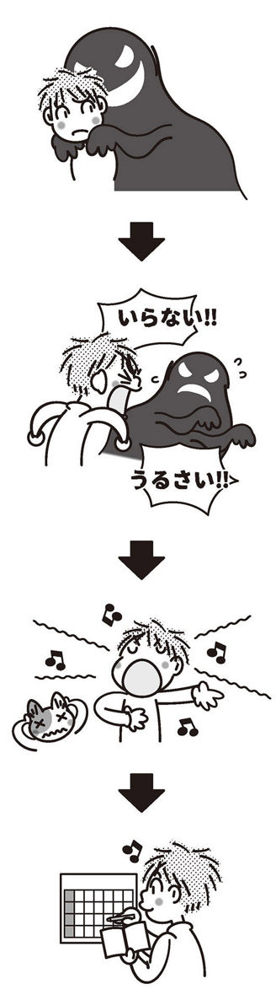
鎖骨トントン
イヤなイメージをよく思い出す場所のひとつにお風呂場があります。普段の生活の中で本を読む、マンガを読む、テレビを見る、インターネットで記事を読む等の外部刺激が脳に流入している時には、脳はそのことにフォーカスしていますが、お風呂に浸かっている時には情報が少なくなるために、外部刺激が単調になり脳が勝手に暴走してしまうのです。そしてイヤな記憶にフォーカスし、そのイヤな記憶に翻弄されやすくなるのです。
そこで、お風呂でもできる簡単なワークをご紹介します。
お風呂にゆったりと浸かっている時、自分の鎖骨を触ってみてください。その鎖骨のいちばんでっぱったところを確認してみましょう。利き手の中指の腹で鎖骨のでっぱったところを軽く「トントン」と叩いてみましょう。一定の間隔でリズミカルにトントンしてみてください。
そうしていると、段々と鎖骨が振動しているのがわかるようになります。その鎖骨の振動に意識を集中してみてください。「鎖骨が振動しているなぁ」と考えながら、ずっとトントンと軽く叩き続けてみましょう。
その振動が身体の内部まで振動を伝えていきます。その心地よい振動を感じながら続けてみてください。
慣れてきたら、言葉をプラスしてみましょう。
「大丈夫」「なんとかなる」「うまくいく」「気にするな」
「大丈夫」「なんとかなる」「うまくいく」「気にするな」
この言葉を、振動と共に身体の中にインストールするようなイメージで繰り返し繰り返し自分に伝えてあげてください。
そうすることにより、自分の中に溜まっていた感情が排出されていきます。感情と記憶のネットワークが段々と切れていき、イヤな記憶を思い出すことが少なくなっていきます。
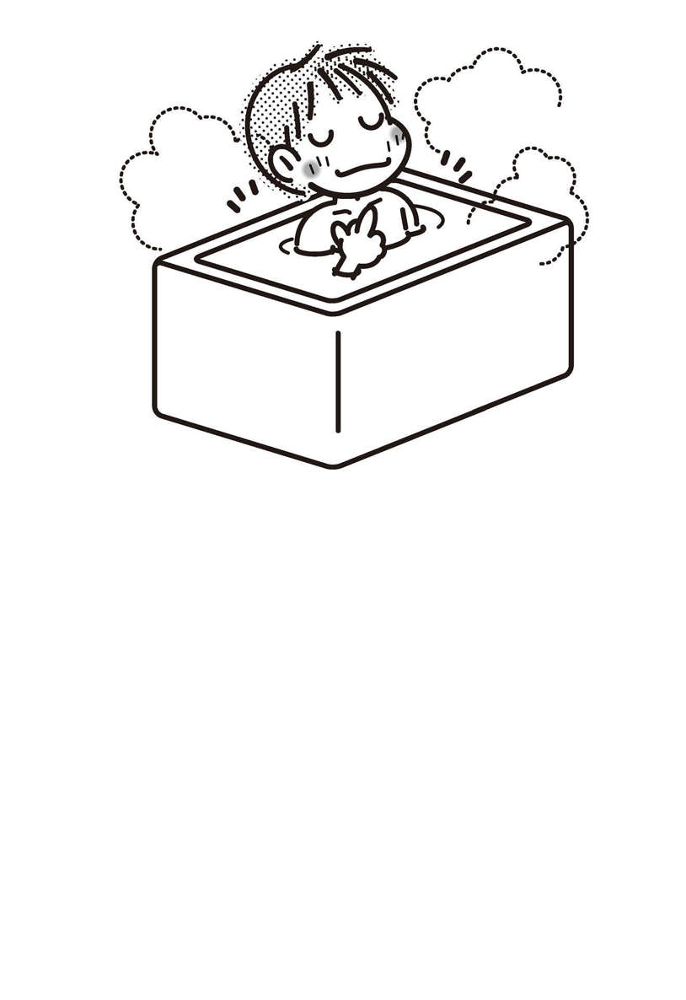
爪圧迫法
爪圧迫法のワークはどこでもできます。お風呂でも電車の中でも待合室でも会社でもトイレの中でも、そして寝る時のベッドの中でも可能なワークです。
まずは利き手と反対側の手の親指の爪を見てください。その親指の爪の付け根の両端を、利き手の親指と中指で軽く押さえてみましょう。痛いほど圧迫する必要はありません。「心地よいな」と感じるくらいの軽さで刺激します。そして爪の付け根を軽く押さえがら呼吸に意識を向けてみましょう。
息をゆっくりと深く吸って、ゆっくりと吐きながら、イヤな記憶が呼吸とともに外に排出されるようなイメージをしてみてください。深くゆっくり３回呼吸してみましょう。
次に指を変えて、人差し指の爪の付け根を軽くぎゅーっと挟みながら、同じように深くゆっくりと３回呼吸してみましょう。イヤな記憶が身体の外へと出て行くイメージをしながら続けてください。
頭の中で「もう、この記憶は要らない...、この記憶は必要ない...」と考えながらやってみてください。
次に中指に移動して同じように。薬指、小指も同じように繰り返してください。
５本の指すべてで１セットです（もし、どうしても薬指を押さえたくない人は、薬指は外してかまいません）。怒りや悲しみといった感情も、呼吸とともに吐き出してみましょう。
これを、心がスッキリするまで続けてみてください。だいたい３セットくらい繰り返すと、だんだんと心が穏やかに落ち着いてくると思います。
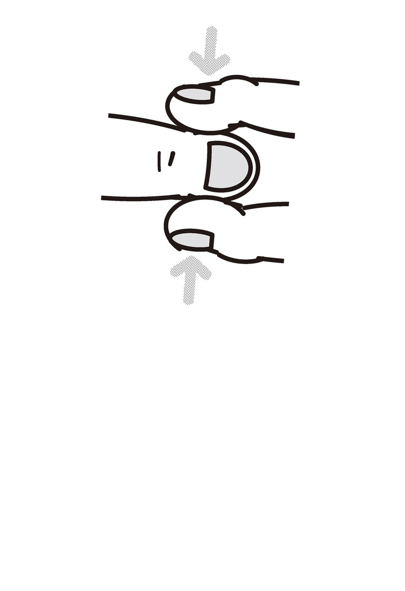
スクエア・アイ・ムーブメント（ＳＥＭ）
スクエア・アイ・ムーブメント（ＳＥＭ）は、地震や津波などの災害やＤＶ、モラル・ハラスメント、体罰等のトラウマ的な体験によるＰＴＳＤの脱感作などに効果があると言われているＥＭＤＲの発展形です。自宅にいながらたった一人でもできますので誰でも簡単に取り組むことができ、そして短時間での改善効果が望めます。
まず最初に準備しておくのは、楽しい映像のひとつだけ。まず、楽しい映像をひとつ決めてみましょう。静かな草原でのんびりしているところや森の中で川のせせらぎに耳を澄ましている場面、これまででいちばん楽しかった瞬間などで大丈夫です。まったくのでっち上げの記憶でもかまいません。
未来の「こうなりたい」という映像の瞬間を切り取っても大丈夫です。たとえばミュージシャンになってステージで気持ちよく歌っている場面や、憧れの高級車を手に入れて、その車で好きな人とドライブしているところでもかまいません。心がワクワクする場面や、心がほっと落ち着く癒される場面を思い浮かべてみてください。
さて、いつものようにイヤな記憶を思い出してみましょう。その記憶を思い出しながら、部屋の四隅に目を動かしてみます。顔は動かさずに、目玉だけ時計回りに動かします。
左上、右上、右下、左下の順番で、イヤな記憶を思い出しながら10周くらいしてみましょう。目を動かすスピードは、１か所、１秒程度です。その後に目を閉じて、先ほどの楽しい場面を思い浮かべてみてください。
これを数セットするだけでイヤな記憶は薄らいでいきます。
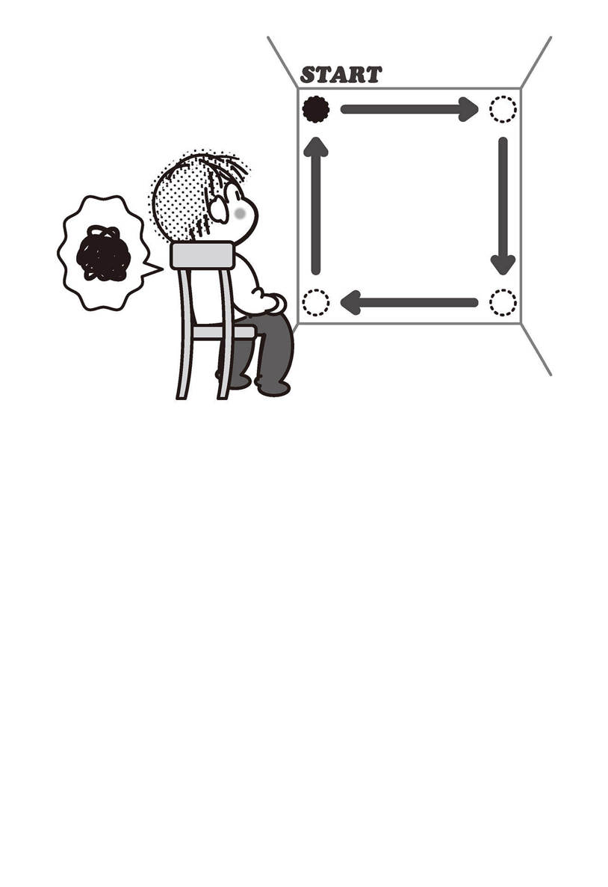
この時に、先ほどの「爪圧迫法」を組み合わせると、さらに効果が上がりますので、ぜひ試してみてください。この場合は、親指の爪を圧迫しながら１周、人差し指の爪を圧迫しながら１周というふうに１周ごとに圧迫する指を変えてください。
（１）イヤな記憶を思い出しながら部屋の四隅を見る
（２）その時に、同時に爪を圧迫する
（３）10周程度やったら、目を閉じる
（４）楽しい、心地よい場面を思い浮かべる
この順番でやってみてください。
親指の爪を圧迫しながら、時計回りに四隅を見る。次に人差し指の爪を圧迫しながら四隅を見る。これを５本の指で繰り返してみましょう。
このスクエア・アイ・ムーブメントは、記憶と感情を切り離すのにとても役立ちます。記憶と感情を切り離すという脳の再パターン化プログラムによって、脳に固着していたイヤな記憶を思い出す必要がなくなり、楽に過ごせるようになるのです。
イメージ・ナラティブ・セラピー
世の中には自分の都合のよい記憶だけを保存している方がいます。ご都合主義的ですが、それでも他人に迷惑をかけない限りは素晴らしい生き方だと思います。私たちは自由にどのような過去を保存していてもいいのです。
過去のイヤな記憶の物語を、楽しい幸せな物語へと書き換えることで人生が生きやすくなったり、自信が持てるようになるのであれば、それは積極的に導入すべきでしょう。イメージ・ナラティブ・セラピーは過去のつらく苦しい物語を、自分の望む嬉しい幸せな物語へと書き換えていくワークです。
過去のイヤな記憶の気に入らない状況や気に入らない言葉を書き換えて、心地よい幸せな状況や言葉に置き換え、その新しい幸せなイメージを保存しましょう。
たとえばクラスの発表会でみんなに笑われた過去がある人は、その時の状況を思い出してみじめな気分になり自信も失っていくと思いますが、その状況を新しい記憶に置き換えてみましょう。自分はみんなの前で堂々と話すことができ、クラスのみんなが感心したような表情で拍手してくれて、先生は満面の笑みでほめてくれた。その時にあなたは、その先生に本当は何と言われたかったでしょうか。「すごいね！」「素晴らしい！」という言葉を先生の声でリアルに再現してください。
そして、その新しく創った過去の記憶を保存しましょう。
お母さんに絵を捨てられた
小林さん（女性・40歳）がセラピールームを訪れたのは５月のある晴れた日だった。
席に座って一呼吸置くと、自分の生い立ちについて語り始めた。
忙しく働き、あまりかまってくれない母親と、一方的に怒鳴りつける父親に育てられた小林さんは自信がなく、いつも不安を抱えながら生きているとのことだった。
そのなかで、どうしても消せない記憶のことを語り始めてくれた。
「小さい時、お母さんに絵を捨てられたことがあるんです」
「なるほど。何歳くらいの時の話ですか？」
「幼稚園の時の話です。その日は母の日だったので、幼稚園でみんなでお母さんの似顔絵を描いたんです」
「なるほど」
「子供が描く絵ですからもちろん上手ではなかったんですけど、お母さんに手渡す場面やお母さんの喜んでくれる笑顔を想像しながら、自分なりに一生懸命描いたんです」
「うん」
「家に帰って得意満面でお母さんにその絵を渡したら...」
彼女は声を詰まらせながら話を続けた。
「想像していたのとはまったく違い、そっけない態度で無言で受け取ったのです」
「なるほど」
「その絵をほとんど見ずに、棚の上にぽんっと置いて、また台所へと戻って行きました」
「うん」
「それだけではないんです。翌朝、たまたまゴミ箱を見たら、私の絵がゴミ箱の中に入っていたんです...」
彼女の目から涙があふれる。
ハンカチで口を押さえながら絞りだすような声で語ってくれた。
彼女の幼少期の体験を聴きながら、その時の状況が目に浮かぶようだった。
愛してもらえるはずの時期に、親からの愛情を受け取れなかった彼女の人生を想った。
「そうかぁ...。それはひどいですね」
その言葉に、彼女は涙を拭きながら黙ってうなずいた。
「私は母親を恨んでいます。この記憶がある限り、私は母親に優しくできないんです」
「なるほど。でも、もうあなたも40歳になります。もうすでに小さな自分ではありません。
結婚もしていて経済的にも自立できています。今はお母さんがいなくても生きていけますよね？」
「ええ、そうですけど...」彼女は続けた。
「頭の中ではわかってるんですが、どうしても許せないのです」
たしかに自分をいちばん愛してくれるはずの身近な存在である母親から受けた心の傷は、何十年にも渡って彼女を苦しめてきたであろうことは容易に想像できた。
しかし、今後の残された人生まで同じように苦しんでほしくなかったので、私は決断を迫るために少し強めの質問をしてみた。
「そうですか。このまま一生恨みながら苦しい心で過ごしたいですか？ それとも、その記憶を忘れてお母さんに固執せず楽に生きていけるようになりたいですか？」
「楽に生きていけるようになりたいです」彼女は小さな声で答えた。
「なるほど。ありがとう」私は答えてくれた彼女にお礼を言ってから話を続けた。
「では、最高の物語に書き換えていきましょう」私はナラティブ・セラピー的なアプローチのイメージワークを提案した。
「本当はどんなふうにお母さんに受け取ってほしかったんですか？」
「笑顔で、『ありがとう』と受け取ってほしかったです。『上手に描けたね』って...」
そう言いながら、また、彼女の目から涙があふれた。
「そうですよね。そういうふうに言われたかったですよね」私は彼女の考えにとても共感できた。
そして次の質問をしてみた。
「翌日には捨てられていた絵ですが、本当はどうなっていてほしかったですか？」
「ゴミ箱に入れられていたのはショックでした」
「うん、わかります。どうなっていたら最高でしたか？」
「そうですね...」彼女は少し考えた後、こちらの様子をうかがいながら答えてくれた。
「もし、理想で言えば...、冷蔵庫に私の絵を貼ってくれていて、お母さんからも私に手紙を書いてくれたらすごくうれしかったと思います」
彼女は涙声になりながらも、しっかりと答えてくれた。
「いいですね。素晴らしいと思います」私は彼女の素晴らしいアイデアを承認した。
「では、その理想の物語に書き換えていきましょう。軽く目を閉じてください。ゆったりとリラックスしてみてください。幼稚園の時のことを思い浮かべてみましょう。お母さんの顔は思い浮かべられますか？」
「はい」
「そのお母さんの顔を、笑顔にしてください。今まででいちばん優しい時の満面の笑みにしてみましょう」
「はい」
「優しい笑顔とともに、お母さんがあなたを抱きしめてくれます」
「本当に言ってほしかった言葉を、お母さんの声で再生してください。
『ありがとう！ 上手に描けたね』って」
彼女の目から涙があふれだす。
「その、うれしかった言葉を何度もリピートして味わってください。それからその嬉しい言葉がキラキラと輝きながら身体の中へと染みこむようにイメージしながら、自分の心の中まで受け入れてください」
彼女は無言のまま、時に軽くうなずきながらイメージワークに取り組んだ。
私は続けた。
「翌朝の場面を思い浮かべてみてください。絵は冷蔵庫のいちばん目立つ所に貼ってあります。ありますか？」
「はい」
「そのとなりに、あなたへのメッセージカードが磁石で留めてあります」
「はい」
「なんて書いてありますか？」
彼女は声を漏らして泣き始めた。
しばらく時間を置いて、口にハンカチを当てたまま答えてくれた。
「今まででいちばんうれしかったよ。生まれてきてくれてありがとう」
そう言うと、彼女は黙りこんだ。何度もその言葉を味わっているようだった。
「さて、小林さん。これからはその、うれしかったほうのイメージを何度も思い出すようにしてください」
「はい」
「それでは、ゆっくりと目を開けてみましょう」
ゆっくりと目を開けた彼女は部屋の明るさに少しまぶしさを感じているようだった。
私は黙ってその様子を見ていた。
彼女は大きくうなずき、話し始めた。
「すごくすっきりしました。そうですね、いつまでも過去にこだわって、つらいイメージを繰り返し味わっていても何も変わりませんよね。先生が言うように、私は新しいイメージを思い出すようにします」
「うん、偉いね！ さすがです！」
「ありがとうございます。今考えれば、いつも怒鳴っているお父さんにおびえながら忙しく生活していたお母さんには、子どもとじっくり向き合うだけの心の余裕がなかったのかもしれません。なんだか、お母さんを許せそうな気がしてきました」
「うん、焦らなくてもいいからね。ゆっくりとでいいからお母さんを許していきましょう。
お母さんのためにも、自分のためにもそのほうがいいと思いますよ」
「はい」
その後、彼女から連絡が来た。
最初のセッションを受けて以来、過去のことはほとんど思い出すこともなくなり、お母さんとはちょっと変化したカタチで仲良くなれたそうだ。
自分が傷ついた時の話をお母さんにしたところ、お母さんはあまり覚えておらず、軽く「ごめんね」と言われただけだったが、彼女は不思議と怒りが湧くこともなく、すべて過去のことだからと受け流すことができたそうだ。
私は、その彼女の後日談を聴いていて、確実に成長できた彼女を感じることができ、とてもうれしかった。
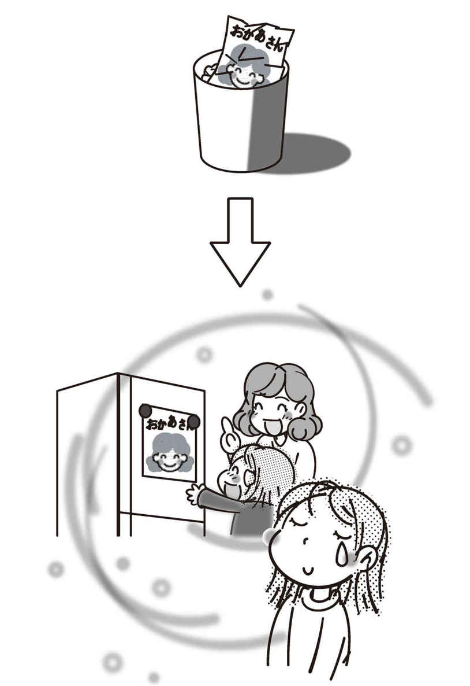
イメージ・ゲシュタルト・セラピー
人はときどき、理不尽な目に遭うこともあります。自分にはなんの落ち度もないのに一方的に責められたとか、小さいころに兄に毎日のように殴られていたとか、学校でのいじめなんかもそうですね。とても理不尽です。
こういう時に相手をやっつけてしまいたいほどのやり場のない怒りの感情に支配されますが、すでに過去のことですので、現実的にはもうそれを叶えることができません。いくら忘れようと思っても、納得しようと思っても怒りの感情がふつふつとわいてきて消えることがありません。
イメージ・ゲシュタルト・セラピーは、今まで溜め込んでいたこの怒りや悲しみの感情を解放し、今までのつらい記憶から距離を置くために有効な方法のひとつです。少し乱暴なやり方も含まれますので、好まない方もいらっしゃるかもしれませんが、できる範囲で取り組んでみてください。
これは頭の中でおこなうことであり、現実的に行動に移すわけではありませんので、社会的な犯罪につながるような危険はありません。このことを「思考の承認と、行動の制限」と言います。実際に行動しなければ、頭の中では何を考えても自由なのです。
たとえば、以前勤めていた会社のお局様が何かわからないけどあなたを目の敵にしていて、いつも嫌味を言ってきたり攻撃してきたとしましょう。その場合、現実的にはもう言い返すこともできませんし仕返しすることもできません。ですが、自分が苦しかったことやつらかったことを、頭の中で相手に伝えること、あるいは思いっきり仕返しすることは自由にできます。苦しめられた分、相手を思いっきり殴ったり蹴とばしたりして、怒りの感情を思いっきりぶつけましょう。
父親や母親に向かって思いっきり自分の思っていたことを伝えることもできます。頭の中で叫びながら伝えてください。小さいころに自分をいじめていたヤツを思いっきりぶん殴る。理不尽な振る舞いをして一方的に怒鳴ってきた部長をイメージの中で思いっきりぶん殴ってみましょう。
中学校でのいじめ
長田さん（女性・23歳）は席に着くと、うつむき加減に話し始めた。
中学校の時になかよしグループだった人たちと、あるきっかけで仲違いし、それからしばらくいじめが続いたようだった。
なんとか中学校は卒業したものの、高校では不登校になりそのまま学校を辞めてしまったそうだ。23歳になった今でも、その時のことを繰り返し思い出してしまい、自尊心が砕かれてしまったとのことだった。
「どうされましたか？」私は話を切り出した。
「中学校のころなんですけど、クラスでいじめにあって、そのことが今でも頭から離れずに、何度も何度も勝手に頭に浮かんできて叫びだしたくなるほど苦しいんです」
「なるほど」
「本当に叫びだすこともあるし、部屋にあるいろいろな物を壊しました」
「うん」
「今はしてないんですけど、10代のころはリスカもしていました」
「リストカットすると落ち着きますか？」
「はい。少しすっきりします」
「そっかぁ。でも最近はしてないんですね」
「はい」
「どんないじめだったんですか？」
「きっかけは何か忘れてしまったんですけど、何かの時に『裏切った』と言われて一方的に責められ怒られて、それから無視されるようになったり持ち物を隠されたり、ノートやかばんにマジックで落書きされたり、その他にもいろいろあったのですが、それが中学校を卒業する間際まで続きました」
「なるほど、そんなことがあったんですね」
「はい」彼女は静かに話を続けた。
「就職もしてちゃんと生活したいんですけど、この記憶があるせいで、就職するにも怖くて。今はできるだけ人に合わないように生活をしています」
「そっかぁ」
「この記憶って消せますか？」
「そうですね。その友人たちには二度と会うことはありませんか？」
「はい。中学を卒業してからは会っていません。今後も会うことはないと思います」
「なるほど」
いじめは理不尽で不当なものであり納得のいかないことが多いので、未完了なままの感情が残りやすい。そこで私は未完了の感情を解放するためにゲシュタルト療法的なアプローチのイメージワークを提案した。
過去のイヤな記憶をたどって追体験し、さらに苦しむ必要はないので、自分を客観視（ディソシエイト）してもらうことにした。
「軽く目を閉じてみてください。中学校の教室を思い浮かべてください。自分を客観的に見てみましょう。中学生の時の自分が目の前にいます。見えますか？」
「はい」
「その中学生の時の自分が目の前で理不尽にいじめられています」
「はい」少し苦しそうに返事が返ってきた。
「でも今のあなたは、もう無力な中学生ではありません。成長して大人になっています」
「はい」
「その大人になったあなたが、中学生の時の無力な自分を助けにいってあげましょう」
「はい」
「いじめてた人たちに向かって心の中で『やめて！ いじめられてイヤだった！ 苦しかった！』というふうに、心の中でその相手に向かって大声で怒鳴ってください」
「他にも言いたいことがあれば言ってください。そして『もう私はいじめるような人たちとは付き合わない！』と宣言してください」
「それから、そのいじめていた人たちを突き飛ばしてください」
「はい」
「蹴ってもいいですよ」
「もう蹴りました」彼女は少し笑った。
「次に中学生の時の自分を抱きしめてあげてください。抱きしめたまま『つらかったね。苦しかったね』って伝えてあげてください」
彼女は声を詰まらせて泣き始めた。
「その中学生の自分が安心するまで、しばらくそのまま抱きしめてあげてください」
しばらくすると、彼女の表情が少しだけ穏やかになった。
「中学生の時の自分は、少し安心していますか？」
「はい、少し安心しています」
「よかったです。いじめられていたのはすべて過去のことです。今現在のあなたがいじめにあっているわけではありません。そのことを、その中学生の自分に伝えてあげてください」
「はい。わかってくれたみたいです」
「よかった。では、その子の味方でいることを伝えてから、ゆっくりと目を開けてみましょう」
彼女はゆっくりと目を開けた。
少し安心感が広がっているように感じた。
「今のワークの中で、どんなことを感じていましたか？」私は尋ねた。
「はい。少し安心しました。今までずっと言えなかったことが言えたような気がしています。とてもスッキリしています」
「うん、よかったです」
「でも、今まではこんなこと、やってはいけないような気がしていました」
「そうですね、少し乱暴なやり方ですよね」そして私は続けた。「でも、あなたはそれほど苦しめられていたし、実際に暴力を振るったわけではありませんから。頭の中で何を考えても自由なんですよ」
「はい」彼女は軽くうなずいた。
「いじめられていたのは、もうすでに過去のことです。そんなことを思い出しても、なにも解決できることはありません。それよりも今後の自分の人生のために前向きに生きていきましょうね」
「はい、そうすることにします！」彼女は明るく答えた。
その後、対人関係の話をしてその日のセッションを終えた。
後日、彼女からメールで報告があった。
セッションを受けて以来、自分でも不思議なくらいに過去のことに関する執着はなく、前向きに生きることができるようになったと書いてあった。まだ、あまり自信はないが、以前からやりたいと思っていたネイルの学校に通っているとのことだった。
最後に「これからは、もっと強くなりたい」という言葉で締めくくられていた。私は彼女の中にこれまでとは違うひたむきさと強さを感じた。
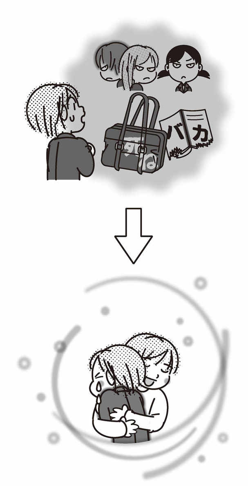
運命だったんだ！ と運命のせいにする
過去に起こったできごとをあきらめてしまえば、少しだけイヤな記憶と距離を置くことができます。日常の生活の中で起こるさまざまなできごとの中には、到底納得のできないこともたくさんあります。あきらめようと思ってもあきらめきれないことなどもあるでしょう。しかし、あきらめきれないからと言って過去に執着していても、過去を変えることは私たちにはできません。そんな時は思い切って運命のせいにしてしまいましょう。
たとえば婚約していた彼氏に、何かの事情で婚約を破棄されたとします。当然、納得のいかないできごとですので何とかヨリを戻そうとしますが、彼氏は同意してくれません。そんな時はいつまでも嘆き悲しむのではなく「あぁ、きっとこの人とは結ばれない運命だったんだ」と運命のせいにしてあきらめてしまったほうがいいでしょう。あるいは「きっと神様が『結婚するのはその人ではないよ』と教えてくれているんだ」と思ってしまうことです。
何か失敗してしまったことを、いつまでも悔やんでいても過去を変える方法はありません。「あぁ、これは失敗する運命だったんだな」と割り切ってあきらめて、前向きに解決方法を考えたほうがよほど合理的な思考と言えます。
今までの人生で起こったできごとのすべては、運命のせいにしてしまうことです。なぜかはわからないけれど、この両親のもとに生まれてくる運命だったんだ。結果的にこの学校に入る運命だったんだ。この会社に入る運命だったんだ。この人とはこうなる運命だったんだ。仕方がない。
もし恋人とお別れすることになったとしても、それで人生が終わったわけではありません。また新たな恋をして、違うパートナーと出会い、その人と人生をともにすることになるのかもしれないのです。人生なんてどこでどう転ぶのかは、まったく予測もできません。私たちは与えられた運命の中で精いっぱい生きるしかないのです。
ちなみに私は、すべてのことは過去も未来も決定されているという運命論者ではありません。運命をどのように解釈するのかはその人しだいですが、私は過去についてはすべて運命で、これから先の未来については運命などない、という〝ご都合主義運命論〟を持っています。
過去のことは変えられませんが、未来のできごとは自分の努力や考え方や、これから取るであろう自分の行動でいかようにも変えていけるはずです。チャレンジすればそのような人生、引きこもっていれば、いつまで経ってもそのような人生が待っているのです。それを選択することは、私たちができることなのです。
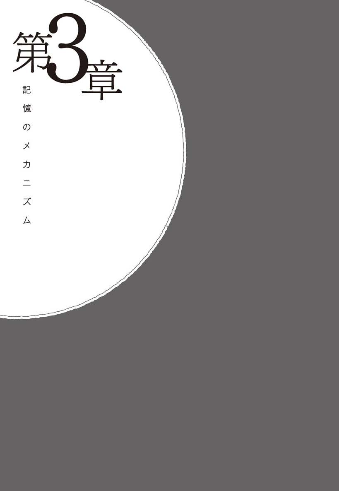
「先生、すごいですね！」
いくつかの記憶を消すためのテクニックを教えてもらい、僕は高揚していた。もうすでに記憶は薄らいでいるし、軽く思い出してもイヤな感情がまったく湧いてこない。映像は残っているけれど、これまでのようにリアルに感じているわけではなく、古ぼけた写真のように味気ない遠い昔のできごとのように感じている。これは期待できる、と僕は思った。
「どうですか？ 自分の記憶をコントロールできそうですか？」先生は相変わらず穏やかな口調だった。
「ええ、これなら僕にもできそうです」
今まで考えたこともないような考え方やテクニックを教えてもらい、僕の知的好奇心は満たされていた。もちろんすべてのテクニックが有効かどうかはわからないが、いくつかのテクニックは自分にはとても効果があった。
しかし僕の高揚感を察してか、先生は僕の目を見ながらしっかりとした口調で言った。
「今、これで終わったような気がしていると思いますが、これからが始まりなんですよ」
「どういうことでしょうか」僕は訊ねた。今日やっと、今まで抱えてきた重い荷物を降ろせたような解放感に浸っていた僕は、なんだか水を差されたように感じた。
「記憶は一度、あなたの脳に定着しています。今、一瞬だけ記憶が薄らいでいるような気がするかもしれませんが、また何かの拍子に思い出してしまうこともあるでしょう。その時に、あなたがまた同じようにその記憶を味わっていると、また、もとに戻ってしまいます」先生は静かな声で話した。
なるほど。たしかにそうかもしれない。忙しい時にはイヤな記憶を思い出していなくても、ふと気を抜いた瞬間にまた思い出すということを、これまで何度も繰り返してきた。これは今だけのことなのかもしれない。また何かのきっかけで思い出してしまうのだろうか。
「先生、また思い出してしまったら、どうすればいいのでしょうか」僕は聞いてみた。
「先ほどのワークで、自分に効果のありそうなものはありましたか」
「ええ、いくつかのワークはとても新鮮で効果がありました」
「よかったです。思い出しそうになった時には、またその自分に効果のありそうなテクニックを使い、『思い出さない』を続けてみてください。あなたの中で何度も何度も湧いて出てくるその記憶と向き合わないことです」先生は言った。
僕はふと疑問に思った。
人々は楽しかった記憶を思い出してうれしく感じたり、つらい記憶を思い出し落ち込んだり悲しくなったりしている。記憶がなければ楽に生きていける反面、記憶がすべてなくなっしまえば普通に生きることさえ難しくなる。そして先生は、ほとんどの記憶は必要ないという。記憶とは何だろうか。なぜ私たちには記憶があり、その記憶に翻弄されてしまうのだろうか。
「先生、そもそも記憶って何でしょうか」僕は訊ねた。
「そうですね。記憶にはいくつかの役割があります」先生は話し始めた。「あなたは朝起きた時、自分が誰だかわからなくなったことがありますか？」
またおかしなことを言い始めた。この先生はいつもおかしな質問ばかりしてくる。
「いえ、ありません。そんなこと考えたこともありません」
「そうですよね。記憶の役割のひとつは自己同一性を保証するものです。毎朝、目が覚めるたびに『あれ、私は誰だっけ？』というふうに、自分が誰だかわからなくなってしまっては、生活がとても不便になってしまいますし、積み重ねによる発展性がなくなってしまいます」
「なるほど。たしかにそうですね」僕は言った。
「たとえば毎日のできごとの記憶がなくなってしまえば、自分が自分であるということが解らなくなってしまったり、同じ失敗を繰り返したりすることになります」先生は続けた。
「記憶は自分が誰なのかを保証してくれます。そして、私たちは過去の失敗から学び、成功へ近づくための経験を蓄積しているのです。この経験の蓄積が記憶の役割なのです」
なるほど。失敗と捉えるのではなく、経験の蓄積と捉えれることもできなくはない。僕はそう思った。そして、そういうふうに考えたほうが生きる上では心が楽になる。さっきまでは記憶なんてすべてなくなってしまえばいいと思っていたが、そういうものでもなさそうだ。記憶について僕はもっと知りたくなった。
記憶のメカニズム
そもそも記憶とは何だろう
私たちの誰もに記憶があります。記憶とは自己同一性を保つためになくてはならない機能なのです。幼少期からひとつの連綿とつながったの記憶があるからこそ、自分が自分ということを認識できるのです。
もし私たちの記憶がなくなってしまうと、どんなに不便なのかは想像に難くないと思います。自分の名前も思い出せず、帰る家もわからず、家族の顔さえも思い出せなければ、日常の生活すらままならなくなってしまうでしょう。私たちは眠りから覚めた時に、自分が誰だかわからないということはまずありません。ひとつのつながった記憶があるからこそ自分が自分であり続けることができるのです。
また、昨日やったことや取り組んだことを忘れてしまえば発展性もなくなります。記憶があるからこそ、積み重ねによる進歩や進展ができるのです。失敗したことを完全に忘れてしまえば、また同じ失敗を繰り返すことになってしまうでしょう。過去の偉人の成功例や失敗例も含めて記憶しておくことで文明が発展しているのです。
事故などで記憶喪失になってしまうと自分の名前さえわからなくなることもあり、通常の生活に支障をきたすこともあります。乖離性同一性障害の方などは、時に自分のとった行動や発言の記憶がなく困惑することもあります。
このように私たちが生活する上では欠かせない大切な記憶ですが、私たちは記憶を完全にコントロールしているとは言えません。忘れてしまいたいのに頭の中をグルグルと回って離れてくれないイヤな記憶がある一方、テスト勉強や出会った人の名前、買い物リスト、仕事のタスクリストなど、覚えておきたいと思っているのにちっとも覚えられず、忘却の彼方へ流れ去っていく記憶もあります。
なぜ、私たちの脳の中でこのようなことが起こるのでしょうか。それにはまず、記憶のメカニズムから探っていきましょう。
記憶ができるメカニズム
私たちの脳の中で記憶が作られるためには、何らかの経験など、五感による外部刺激が必要になります。見る、聞く、嗅ぐ、味わう、皮膚感覚といった五感を通して得られた情報を知覚し、そのなかで必要なものや興味のあるものを取捨選択して記憶としてとどめるのです。
外部から得られた情報以外では、夢や妄想などのイメージによる内部刺激でも記憶を創りだすことは可能です。夢を見た時に、それを思い出さなければほとんどの夢はすぐに忘れていきますが、見た夢を自分でトレースしながら人に話したりすると記憶にとどまることもあります。
まず、五感から得られた情報に私たちはどのように反応しているのでしょう。どのような情報刺激があったとしても自分にとって必要のない、あるいは興味のない情報は数秒程度で忘れていきます。
自動車を走らせていて交通標識を見かけることがありますが、それを克明に描くことのできる方はいったいどのくらいいらっしゃるでしょうか。信号機の赤、黄色、青の順番はわかりますか？ あなたが毎日見ているはずの携帯電話のボタンの並び順を正確に描けるでしょうか。このように興味のないことは毎日繰り返し見ていたとしても、すぐに忘れてしまうものなのです。
次に、興味や必要があれば中期記憶へ移されます。いわゆるワーキングメモリーですね。何らかの仕事をする間は覚えていますが、必要がなくなればその記憶は削除されます。ある取引先とのつながりがあるうちはその仕事内容や取引先の方のお名前も覚えていますが、その取引先との仕事が終わって数か月から数年も経てば、仕事内容も取引先の方のお名前も忘れていってしまうものです。
中期記憶に一時保存されている記憶は１時間から１か月程度。人によって、あるいは興味の度合いによって少し違うのですが、たいていは９時間以内に消滅していきます。試験の前日に一夜漬けで勉強をした内容は、試験が終わるまでは覚えていますが、必要がなくなればどんどん忘れていきます。数学の公式も社会科の地図記号も英単語の意味も国語で習った熟語の意味も、使い続けなければ忘れてしまうものなのです。
よく忘れてしまうものの代表にパスワードがあります。インターネットが普及し、多くのサイトでパスワードを求められるようになってきましたが、各サイトで違うパスワードを設定していると、どこのサイトでどのパスワードだったか、そもそもパスワードを何にしたのかさえ覚えていないこともしばしばです。
次に、中期記憶に保存された記憶を長期記憶に移すには一般的には２種類の方法があります。
ひとつは反復です。何度も何度も繰り返し味わった記憶は、脳が勝手に必要な記憶だと思い、ニューロンのつながりが強くなり忘れづらくなっていきます。反復すればするほど、そのつながりは強固なものへとなっていくのです。
もうひとつはエピソード記憶です。私たちは桃太郎や一寸法師、浦島太郎など、幼少期に数回しか聞いたことのない物語でも、だいたいのあらすじを覚えています。無意味な数字などを覚えるときには、ほかのイメージと連結することです。たとえばルート５の答えは2.2360679です。ただの無意味な数字の羅列でしかありません。これをそのまま覚えるのは難しいのですが、語呂合わせなら覚えやすくなります。ルート５の答えは〝富士山麓オオム鳴く（フジサンロクオオムナク）〟と覚えたほうが、ただの数字の羅列を覚えるよりも一段と覚えやすくなるのです。この語呂合わせもひとつのエピソードのようなものなのです。
無意味な数字の羅列で言えば、有名な円周率があります。3.1415926...というやつですね。円周率の暗記法も同じように語呂合わせで覚えることができます。
それ以外では、命の危険があるような衝撃とともに強い感情を伴い感じた記憶というのは、一瞬にして長期記憶へと保存されやすくなります。自分の命を守るというのは私たちにとっては最重要なことなので、これは必要あってのことなのです。
あなたが忘れてしまいたいイヤな記憶であったとしても、起承転結のエピソード付きで、しかも感情を伴って繰り返し思い出していると長期記憶として定着していきます。しかし、一度定着してしまった記憶であったとしても、思い出さないことを続けていれば、いつしかニューロンのネットワークは切れてしまい、だんだんと思い出しづらくなっていきます。
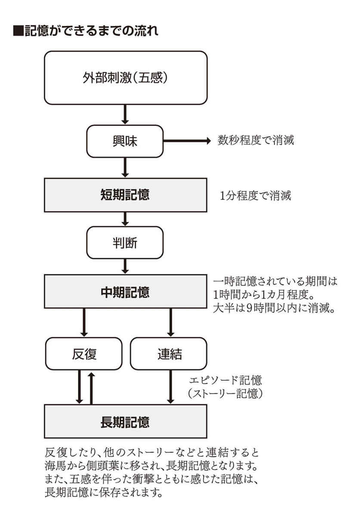
記憶は脳の表面を走る電気信号
脳科学的に説明すると、私たちの脳の記憶のメカニズムはパソコンなどの記憶装置と違い、整列的に並べられた情報素子でできているわけではありません。脳細胞であるニューロンのネットワーク上を走る微弱な電気信号（インパルス）でしかないのです。どの経路を通って思い出すかによって、その記憶の内容は少しずつ形を変えていきます。ニューロンのネットワークは無限のつながりを持っていますので、その記憶の周辺事項も織り交ぜながら思い出すのです。何かを思い出した時にイヤな感情や心地よい感覚とともに思い出すこともあるでしょう。
たとえば昔、大好きで繰り返し聞いていた曲を数年後に聞くと、その時の情景や雰囲気や感情までもが一気に呼び覚まされることもあります。また、以前付き合っていた恋人と同じ香水の匂いを嗅いだ瞬間に、とても懐かしい感覚に戻ることもしばしばあると思います。しかし、それが正確な記憶であると一概に言うことはできないのです。
私たちの脳という器官はバイオコピューターなので、日に日にその姿や形を変えています。脳細胞の数は約１５０億ほどあり、毎日10万ほどの脳細胞が死んでいます。私たちの身体の細胞は３～６年程度ですべての細胞が入れ替わると言われています。
しかし、私たちには10年以上も前の記憶もちゃんとあります。これは、新しい細胞が生まれたときにちゃんとその情報が伝わるように、新しい回路としてのつなぎ替えをするのです。ですが、まったく同じようにつながることはありませんので、少しずつ記憶の形が変化していくのです。
たとえば私たちが仕事やゲームをしている時に、どうしてもクリアできない問題があったとします。しかしクリアできないままでは先に進めないので、数日間ずっとそのことだけを考え続けていると、ある朝、突然、ひらめきが舞い降りてくることもあります。ブレイクスルーの瞬間ですね。このようにずっと特定のことだけを考えていると、その思考に適した回路がつながって電気信号が伝わりやすくなるのです。
ある特定の記憶を思い出す時に、どの回路を通って思い出すのかが重要で、興味もなく感情も伴わない、あまり自分には必要のないと判断された記憶は、そのネットワークがどんどんと切れていき、やがては記憶から消去されていくこととなるのです。
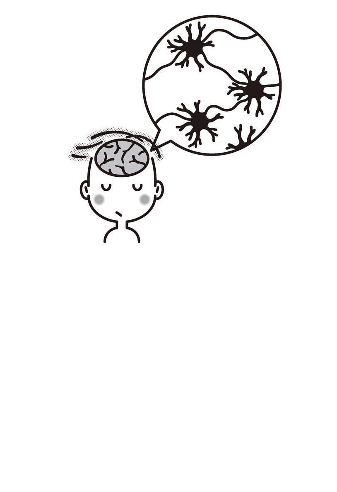
記憶の不確実性
心理学的には違った見方もできます。私たちの頭の中にある記憶は過去のできごとなのですが、その過去がすべて真実とは限りません。私たちの心には確証バイアス（何かを認知する時のフィルターのようなもの）という仕組みがありますので、何かの情報に触れたときに万人が同じような印象を持って正しく記憶として保存しているわけではないのです。
自分の情報フィルターを通ったものしか自分の脳には入ってきません。たとえば数人で喫茶店に入った時に、自分の大好きな曲が流れていたら自分は記憶にとどめるでしょうが、他人が同じように記憶しているとは限らないのです。まずは情報の入力時点ですでに自分の好き、嫌いといった感情も含めて、情報の取捨選択をしているのです。
絵画が好きな人はモネやゴッホやゴーギャンやシャガールの絵を正確に言い当てることができるかもしれませんし、絵画にまったく興味のない人は誰が描いた絵なのかまったく判別できないでしょう。
たとえば、ミッキーマウスが大好きなＡさんとミッキーマウスにまったく興味のないＢさんが手をつないでディズニーランドに行ったとします。ほぼ同じ行動をしていますので、ほぼ同じような景色を見ているはずです。しかし、Ａさんは入り口にミッキーマウスがいたことを認知し、Ｂさんにはまったく見えていないこともあるのです。
また情報というのは、入力の時点ですでに自分なりのフィルターがかかってしまうため、その情報をゆがめた状態で入力してしまうのです。テレビに出ているアイドルを見た時の反応は人それぞれで変わってきます。同じ人物を評して、可愛いとか可愛くないとか歌がうまいだとか演技がヘタだとかを自分なりのフィルターを通して見ているのです。
消費税の問題や原子力発電の問題も同じです。同じ日本国に住み、同じような情報にさらされているにもかかわらず、ある人は賛成派に回り、ある人は反対派に回ります。心は自分が信じたい情報を信じやすい傾向にあるのです。これは、私たち一般人に限ったことではありません。研究職に就いていた方ならおわかりでしょうが、どのような研究であってもどのような実験であっても、自分が得たい結果にデータが傾いてしまうことはままあることなのです。
情報の入力の時点で、私たちの記憶というのはすでにゆがめられているのですが、記憶というのは日常の生活を送るなかでさらにその内容が変化していきます。時には何か他の記憶と重ね合わせたり、時には一部削除してしまったり、あるいは実際にはなかった部分を補足して、歪められた過去を記憶として保存しているのです。
たとえば１月と３月と６月と９月に同じ人と同じ場所にドライブに行ったとすると、数年後にはその記憶はごちゃ混ぜとなり、その中から一部を削除したりすることもあるため正確に思い出すことがとても難しくなると思います。
水掛け論のように「言った・言ってない」や「有った・無かった」ということが起こるのは、人それぞれで自分の都合のよい過去を記憶しているために起こるのです。私たちの人生で起こるすべての体験をビデオに撮っておけるなら、あとでそのビデオをもとに検証できるのですが、実際はそういうわけにもいきません。
このように私たちの記憶というものはとても曖昧で不正確なものなのです。それにもかかわらず、私たちは役に立たない記憶や、忘れてしまいたいほどのイヤな記憶を何度も繰り返し味わっているのです。
そもそも記憶とは真実ではありませんから、自分にとって役に立たない記憶、あるいは生活に支障をきたすようなイヤな記憶は削除してしまってかまわないのです。
自分にとって有益な情報や記憶だけに目を向けることができるようになれば、この現実を生きる上で多くの変化を受け取ることができるようになるのです。
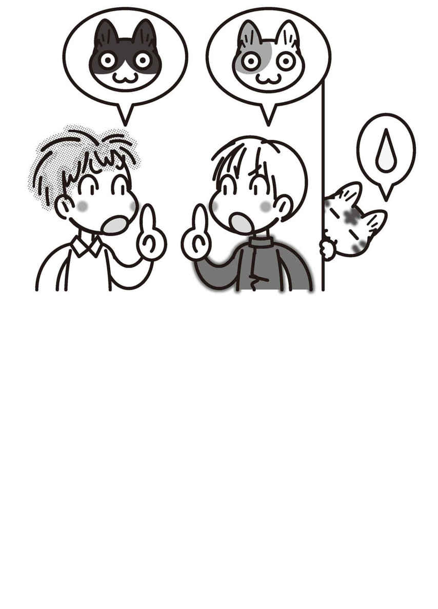
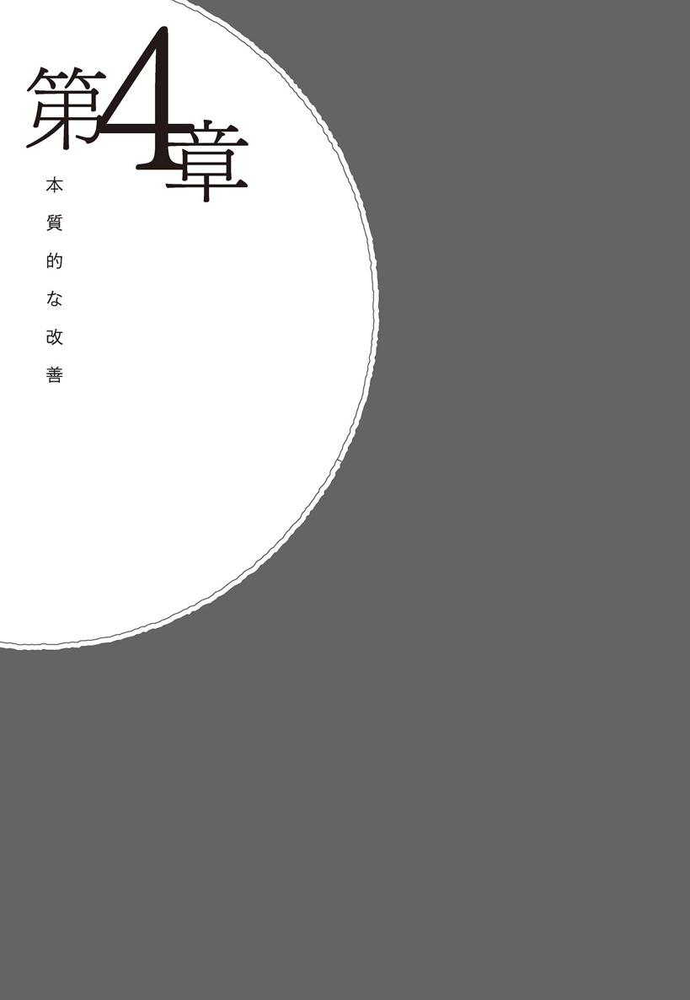
僕はいつしか話に夢中になり時間が経つのを忘れていた。ふと時計を見ると、すでに23時を回っていた。でも焦りは消えていた。明日の仕事のことより、この空間で先生の話を聴いていることが心地よかった。
「先生、とてもわかりやすかったです。これなら自分を変えていけそうです」
「よかったです」先生は短く区切った。それから少し間を置いて話し始めた。
「でも、私が本当に伝えたいことは、そういうテクニック的なことではないんですけどね」
「どういうことでしょうか」僕は訊ねた。
「たとえばこれまでもたくさんのイヤな記憶にわずらわされたと思います」先生は続けた。「でも、また新しくイヤなことがあると最新のイヤな記憶に上書きされたりしてきませんでしたか？」
僕は少し考えた。自分のイヤな記憶をグルグルと味わってしまうのは、たしかにひとつのことだけではない。自分の失敗した時のことや責められた時のことを思い出してはイヤな気持ちになることは、たびたびあった。
「そうですね。たしかに直近のイヤな記憶が頭の中でグルグルしますね。イヤなことがあっても、ある程度時間が経てば忘れていきますが、また何か別のイヤなことがあるとそのことで眠れなくなるということを繰り返してきたような気がします」僕は答えた。
「今日、私が話したテクニックは、実はとても表面的なことなのです」先生は囲炉裏に炭を足しながら話した。「それだけでは本当には変われません。一瞬イヤな記憶を消せたとしても、また新たにイヤなことが起これば、また記憶として溜め込むでしょう」
「はい。でも、その時は今日習ったことを実行すればいいんですよね」
「ええ、そうですね。実行してみてください」先生は続けた。「しかし、それがすべてではありません。今の自分を本質的に変えていければイヤな記憶を溜め込むこともなくなりますし、人生はもっと良いものになります。私が本当にお伝えしたいのはそのことなのです」
僕はいくつかのテクニックを習い、これですべてが解決したかのように思っていたが、先生が本当に伝えたかったこととは違うらしい。僕は興味を持った。もっと奥深い何かがあるのだろうか。
「どういうことでしょうか」僕は訊ねた。
「自分のイヤな記憶と向き合わないやり方は理解していただけたと思います」僕がうなずくのを待ってから、先生は話を続けた。「でもあなたの心の中までは変わっていませんよね」
僕は思った。物事の見方を少し変えるだけで世の中はシンプルになるが、たしかに心の芯の部分はあまり変化していないような気がする。
「そうですね。心の中までは変わっていないと思います」
「そこなんです」先生はきっぱりと断言するような口調で言った。「私がみなさんに本当にわかってもらいたいことは『すべての症状は味方である』ということなんです。たとえば〝イヤな記憶がある〟というのも症状と捉えることができます」
「なるほど。でも、症状さえなくなれば人は自由に生きていけると思うのですが」僕は言った。
「ええ、そうですね、そのとおりです」先生は続けた。「だからこそ、その症状をなくすために薬に頼ったりして症状をごまかそうとします。その結果、表面的な症状をなくすことはできても心の中は少しも変わりません。つまり、人生そのものは変わらないのです」
「ええ、わかるような気もします」僕は言った。
「精神的な問題を抱えると、何かしらの症状を抱えることもあるでしょう。たとえば過食や拒食、不眠症など症状、早朝覚醒や潔癖症などの不安から来る症状、あるいはリストカットのように問題行動とも思えるような行動も、すべて結果として表面に現れているにすぎないのです」先生は続けた。
「その時に、その症状を『敵とみなして、やっつける』というアプローチには少々問題があります」
「何が問題なのでしょうか。症状さえなくなればいいような気がしますが」僕は言った。
「そうですね」先生は一呼吸おいてから話し始めた。
「では、こういう話をしましょう。たとえばあなたがちょっとしたケガをしたとします。その時にあなたはケガの手当てをしますか？ それとも痛み止めを先に飲みますか？」
「もちろん、ケガの手当てをします。多少の痛みであれば我慢できますし、しょうがないことだと思います」
「そういうことです」先生は少し笑いながら言った。「先ほども申し上げたとおり、症状というのは常に味方なのです。違う言い方をするなら『無意識からのお知らせメッセージ』と言うこともできるでしょう」先生は続けた。「たとえば手をケガしたら、痛いし血が出ます。本来なら痛みがなくてもかまわないのですが、痛くなければ手当てもしませんし、またケガをするような行為を続けるでしょう」
「ええ、たしかにそうですね」僕は答えた。
「痛いからこそ手当てをしますし、次回からはケガをしないように気をつけます」先生は続けた。「自分の身を守るために、痛さというのは必要なことなのです。症状とはこの痛みのようなものです」
「ええ、なんとなくわかります」僕は言った。
「たとえば不眠症の方は、眠れなくてとてもつらい思いをします。つらくて困るからこそ改善欲求が働くのです。改善欲求が働くということは、とてもよいことなのです」先生は続けた。「その時に睡眠薬や睡眠導入剤などのお薬を飲んで症状だけをなくしてしまうと自分の本当の問題と向き合おうとしなくなってしまうのです」
「困った症状が現れるからこそ改善欲求が働き、そのことで自分を本質的に変えていけるということでしょうか」僕は先生の言葉を整理し、自分の中でまとめてから質問してみた。
「そう、そのとおりです！」先生はきっぱりと断言するかのように大きな声で言った。
「精神的な問題で困った症状が現れた時に、薬を飲んだりごまかしたり表面的なワークにとらわれるのではなく、本当は自分の心と向き合ってほしいのです」
先生の言葉を聞いていて納得できることはあった。たしかにケガをしたときに痛み止めを飲むのではなく傷の手当てをするのが先決だ。表面的な痛みをごまかすのではなく、自分の心と向き合うことか。それはわかる。しかし疑問も残った。今日、教えてもらったワークは何だったのだろうか。そこで先生に質問してみた。
「先生には今日、いろいろなワークを教えてもらいました。そして、そのことでイヤな記憶はすでに薄らいでいます。でも、このワークは意味がないということなのでしょうか」
「いえいえ、意味がないということではありません。症状を改善させるには表面的なアプローチと本質的なアプローチがあるということです」先生は話を続けた。「表面的なアプローチは心の中までは変わりませんが、今日からでも始められますし即効性もあります。本質的なアプローチというのは恒久的に楽に生きるための考え方を手に入れるということです」
「うーん。難しい話ですね」僕にはうまく理解できなかった。
「たとえば不眠症の方が本質的に生きやすい考え方に変化するには、もしかしたら数年かかるかもしれません。その間、ずっと眠れないのは苦しいですよね。ですから、眠れるようになるための表面的なパターン介入もあります。しかしそれだけでは心の中は変わりません。つまり表面的な介入も必要ですが、それだけではなく本質的な介入も同時にすることができれば、さらにより良い人生になるということなのです」
「なるほど、わかります。では本質的なアプローチとは何でしょうか」僕は訊ねた。
「本質的なアプローチというのは、信念や価値観を含め、心の中を変えていくことです。罪悪感や劣等感をなくして自己肯定的に生きることです。あるいは認められたいという承認欲求をできるだけなくしていくこと、周りの人たちに期待しすぎないこと、こだわりや執着をなくして行くことも必要になりますので、そのひとつひとつを変えていくには時間がかかってしまうのです」先生は言った。
「時間はかかるけど、心の中から変われるということでしょうか」
「ええ、そのとおりです」先生はすぐに答えた。
僕もこれまで何度も自分を変えようと努力してきた。しかし、これまでどんなに変わろうと思ってもなかなか変われない。いや、ぜんぜん変われていない。本当に変わることなんてできるのだろうか。「そうなんですか。根本から自分を変えていくことなんて本当にできるんでしょうか」僕は訊いてみた。
「できますよ。時間はかかりますが、必ず変われます」先生は言った。「生き方や考え方や性格は、これまでの生育環境で培った思考の癖の集合体のようなものです。それをひとつひとつ変えていくことは可能なのです」
僕にとっては難しそうな話だったが、とりあえず先生の話を聴いてみることにした。
本質的な改善
これまでの章ではフォーカスを変えてみるなど表面的なアプローチに終始してきましたが、それがすべてではありません。もちろん表面的な介入アプローチだけでもイヤな記憶と向き合わないようになれるため、普段の生活は格段に楽にはなれますが、それだけでは根本的な解決につながらないので性格まで変わることはないのです。
この章では、根本的に自分と向き合い、自分の心の中のコアになる信念や価値観を含めた性格改善のためのアプローチをご紹介します。少しハードルが高くなりますが、ほんのわずかでも自分の性格を変えることができれば、今の人生はより良いものとなっていくでしょう。
介入アプローチの違い
表面的な介入アプローチと本質的な介入アプローチは何が違うのかを、まずは知っておきましょう。
たとえば、うつ病と呼ばれる方たちへの表面的なアプローチはいろいろあります。いろんな文献を調べていくと「運動することが大切です」とか「規則正しい生活リズムが大切です」とか「バランスの良い食事が必要」とか「朝日を浴びましょう」などの、今までとは違う行動を促すアプローチをよく見かけます。人間は自分の経験から核心を深めていきますので、運動することによって改善を得た方はそれですべての方が同じ方法で解決するように思ってしまうのは無理からぬことでしょう。
しかし、これはすべて表面的な介入アプローチです。いくら行動を変えても考え方は変わりません。規則正しい生活はとても良いことだとは思いますが、規則正しい生活リズムの中で、ずっと自己否定を繰り返したり失敗したことなどに焦点を当てて自分を責め、マイナスのことばかりを考えているとすると、その人は本質的に変わることはできないのです。運動が好きな人であれば、運動すればその場ではとてもスッキリするでしょう。達成感もあり満足感も得られるかもしれません。しかし、自分を責める、自分にダメ出しをするというパターンまでは変えられないのです。
精神科や心療内科医の方たちのアプローチは「お薬を飲んで、ゆっくり休むことです」ということが多いでしょう。お薬を飲んで症状をぼやかしたりすることはできるでしょうし、薬を飲んだ時だけはスッキリするかもしれませんが、本質的に考え方のクセが変わることはないのです。
〝自分に自信が持てる薬〟や〝自己肯定的になる薬〟が開発されれば、それは意味があるでしょう。しかし、現在ではまだそのような薬は開発されていません。そのようなスペシャルな薬が開発されるまではまだ当分時間がかかると思いますので、それまでは積極的に自分を肯定するような考え方やその習慣を身につけるべきなのです。もちろん行動を変えることも大切ですが、それだけに終始するのは問題です。
たいした運動もせず生活リズムも正しくない。食事にも気をつかわず３食コンビニのおにぎりとカップ麺で済ませ、朝日も浴びずに過ごしているにもかかわらず、精神的には健康で、明るく楽しい毎日を過ごしている方も世の中にはいらっしゃると思います。
この違いは、考え方の習慣の違いなのです。自分を肯定的に扱い、世の中で起こる様々なできごとに対してありのままを受け入れることができるようになることが望ましいでしょう。感情的に反応するのではなく、論理的に考え、合理的な判断ができるようになることが本質的な改善につながるのです。
表面的アプローチには意味がない？
では、表面的な介入アプローチには意味がないのか？ というと、そういうわけでもありません。たとえば、夜、眠ることができなかったとしたらつらい毎日です。しかし、過去のことを後悔するでもなく、未来のことを心配することもなく、自信をもって生きられるようになるまでは、正しい関わり合いを続けても数年かかります。その数年間、ずっと眠れないのはとても苦しいでしょう。ですから、表面的な介入と本質的な介入の両方を同時に実行していけばよいのです。
不眠症の場合の表面的なアプローチ（行動への介入方法）は「寝る前にスマホをいじるのはやめましょう」「寝る１時間前から部屋の明かりは暗くしましょう」「カーテンの色を変えてみましょう」「ベッドの位置を変えてみましょう」「アロマを焚いて部屋の匂いを変えてみましょう」「リネンウォーターをスプレーしてみましょう」「寝る前にローソクの明かりを見つめ集中しましょう」「眠る部屋を変えてみましょう」「睡眠導入剤を飲みましょう」などがあります。
この他にもたくさんあると思いますが、それらのことをやってみて眠れるようになるのであれば、それはそれでよいことだと思います。実際に私は７年間、リビングの床で眠っていました。ベッドに入ると緊張してしまい、どうしても寝付けないのです。イヤな記憶がグルグル襲って来たり、「明日、遅刻しないように起きられるかな？」「あの仕事、終わらせることができるかな？」と不安な考えがよぎって眠れなくなってしまうのです。ベッドに入ると寝付けないのに、リビングの床だと、なぜかぐっすりと朝まで眠れたのでなんとか生活はできていました。
それはそれで良いのだと思います。しかし、ベッドに入って安心してゆっくり眠れた方が〝より良い〟ではないですか。そのために考え方を変えるのです。
不眠症の場合の本質的なアプローチは、夜、眠る前にまず自分がどんなことを考えているのかを、考えてみることです（メタ認知）。失敗したことや怒られたことなどを考えていると、イライラして眠れなくなります。また、失敗したらどうしよう？ 間違ってたらどうしよう？ と未来の失敗のことを考えていると不安で中途覚醒してしまいます。
過去にこだわらず、自分に自信を持つことができたなら、余計な思考に支配されずにすんなりとぐっすり眠れるようになるでしょう。みなさんも子供のころのことを思い出してみてください。幼少期はみなさんそうやって眠っていたはずです。
表面的なアプローチは今日からでも始められますし、即効性があります。なので意味はあるのです。しかしそれがすべてではありません。本質的な介入は人生のすべてを変えてしまうほどの効果がありますが、なかなか難しいこともありますし、信念や価値観を根底から変えていくにはそれなりの時間がかかります。どちらも一長一短です。ですから、この両方の介入アプローチを同時に試すことが、人生を変える上でとても大切なことになるのです。
脳は止まることがない
私たちの頭の中には一人にひとつずつ脳という大切な器官が入っています。脳は起きている間中、止まることがありません。ボーっとして何も考えていないような時にでも無意識レベルでは様々なことを思考しています。日常生活の中で多くの時間をマイナスの思考に費やすのか、それともプラスの思考に費やすのかで人生の質は大きく変わってきます。ですから、私たちはこの脳の使い方をもっと熟知すべきでしょう。
私たちは、自分の人生にとって、あるいは自分の心にとって有益ではないマイナスなことばかりを考えながら幸せになることはできません。それでもどうしてもマイナスな思考をしてしまうのは、ただのこれまでの習慣によるものなのです。いわば思考のクセとも言えます。
この思考のクセを変えることができれば、この人生をもっと楽に生きていけるでしょう。マイナスな思考を少しでも少なくするためにはプラスの思考だけをすることです。
世の中にはイヤなことがたくさんありますが、楽しいことも幸せなこともあるのです。どこに焦点を当てるかでこの世の中の見方が変わってくるでしょう。ここで「幸せなことなんて、何もない」と考えてしまう方は、不幸な面ばかりを見てしまう思考のクセがあるのかもしれませんし、あるいは幸せのハードルが高いのかもしれません。日常にある小さな幸せを探す訓練をしてみましょう。
瞑想や座禅の修行で思考を止めることができるのかもしれません。思考さえ止めてしまえば、たしかにイヤな記憶に付きまとわれることもありませんし、苦しみから逃れることはできます。しかし、それでよいのでしょうか。思考を止めた状態というのは、死んでいる状態とそんなに変わらないような気がします。プラスでもなくマイナスでもない、ゼロの状態になっているだけなのです。
たしかにそれで苦しみから救われるかもしれませんが、社会的には何の機能も持ちませんし、なんの役割も果たすことができません。難しい大変な修行をして得られる結果がゼロという状態を望むことを否定はしません。それはそれでありだとは思います。しかし、どうせ修行をするのなら、常にプラスの状態の自分を作った方が自分も楽になれる上に、社会的にも役立つ人になれると思います。
私たちはこの止めることのできない脳という器官を使って何を考えても自由なのですから、積極的にプラスのことを考える訓練をしていきましょう。そして訓練の結果、プラスのことしか考えられないような脳に作り替えることができたなら、もうイヤな記憶に振り回されることはなくなっているはずです。
症状はすべて味方である
精神的な問題を抱えると様々な症状として現れます。抑うつ的な傾向性では不眠症や過食・拒食などの摂食障害、やる気が出ない、無力感、焦燥感、孤独感、リストカットなどの自罰的な行動や買い物依存、ギャンブル依存などの依存症。誰かに求められることで自己価値を確認し安心する恋愛依存などです。また不安系の症状では不安障害、パニック障害、潔癖症、早朝覚醒（中途覚醒）などがあります。
困った症状が現れると私たちも精神科医も、その症状さえなければ問題が解決すると思い込み、厄介なものとして何とかその症状の消失のために取り組みます。しかし、症状というのは〝結果〟なのです。結果として症状が現れているに過ぎません。
英国の作家、ジェームズ・アレン氏も〝結果が現れるには必ず原因がある〟ということを説いています。原因と向き合わず、結果だけを変えても問題が悪化するだけです。これはゴミを捨てずに消臭剤を買ってきて臭いをごまかしているようなものです。どんなにゴミを捨てるのが面倒であったとしても、根本的に解決するためには思い切ってゴミを捨ててしまうほうがより良いのではないでしょうか。
症状というのは厄介なものですが、無駄に出てきているわけではありません。〝その考え方には、なにか問題がありますよ〟と教えてくれているのです。困った症状が現れるからこそ、自分と向き合うことができるのです。表面的な問題解決にこだわらず、根本から自分の考え方や信念や価値観、そしてセルフイメージを書き換えていきましょう。
劣等感
イヤな記憶が固着してしまう原因のひとつに劣等感が挙げられます。劣等感があると、自分はあの人よりも劣っているのではないか？ あの人よりもできていないのではないか？ と常に自分と他人を比較しながら生きることになってしまいます。
そうなると、相手がちょっとでも不遜な態度を取ったり、少しからかわれただけでとてもバカにされているような気持ちになり、そして怒りを感じるでしょう。人生の多くの場面でイライラしながら過ごすことになってしまうのです。そしてその怒りの感情とともに「わかってもらえない」「許せない」という気持ちになり、その時の状況や場面を何度も思い出し、イヤな記憶を固定化させてしまうのです。
相手が劣等感を抱えている場合は、自分がいくら相手のためを思い、よかれと思ってアドバイスをしても、「そんな、上から目線で言われたくない！」と逆上されることもあるかもしれません。
自分のパートナーや恋人を他の人に取られてしまった時など、喪失感とともに劣等感も同時に感じることがあります。劣等感があると、〝失われた〟だけではなく〝負けた〟とも感じているのです。常に負けているような気がすると、怖くなり不安感が増したり、何とかしなければ...と焦燥感につながることもあります。
劣等感は最初は向上心として利用できます。「負けたくないから頑張ろう」という気持ちで、勉強やスポーツを頑張れます。学生時代であれば点数評価できることが多いので、多少の劣等感があるのはよいのかもしれませんが、勉強でもスポーツでも常に１番になり続けることは難しいですし、それを目指し続けるととても疲れます。ましてや社会人になると点数評価できないこともたくさん出てきますので、自分を苦しめることになってしまします。
たとえばあなたが何かの企画書を作る時に、○○さんに負けないような企画書を作ろうと思うのは間違いで、お客様に喜んでいただける最良の企画書を作ろうと考えることが正しい考え方なのです。
そもそも人生とは競争ではありませんから、自分と誰かを比べる必要はありませんし、勝ち負けで判断する必要はないのです。
すべての人がユニークな存在で、すべての人が多様な個性を持っています。勉強の得意な人、スポーツの得意な人、人前で話すのは苦手だけど企画書を作るのは得意な人、人づきあいは苦手だけど突飛なアイディアはどんどん湧いてくる人、不器用だけど真面目で実直な人、いい加減だけど憎まれない人、ひきこもりがちだけどパソコンにはとても詳しい人。それぞれが自分の個性を認めて、誰かと自分を比べることなく生きていくことが大切なのです。
もしかしたら、この文章を読みながら「私には他人より優れたところなんて何もない」と考えるかもしれません。しかし、人生は競争ではないのですから人より優れていなくてもいいのです。自分は自分のできる範囲でできることをやればいいと思いますし、本当に自分が目指す道が見つかれば、そこに向かって進むための第一歩を踏み出せばいいのだと思います。
完璧な人なんてどこにもいませんし、完璧な人生なんてどこにもありません。村上春樹さん風に言うと〝完璧な文章が存在しないようにね〟ということです。自分と誰かを比べながら生きるのではなく、自分は自分の人生を生きていきましょう。
罪悪感
イヤな記憶を溜め込んでしまう、もうひとつの大きな原因は罪悪感です。
失敗して迷惑をかけてしまったり、誰かにケガをさせてしまったり、誰かを怒らせてしまった時などに、「あぁ、なんてことをしてしまったのだろう」と自分の至らなさを恥じ入り、強い罪悪感に襲われることがあります。現実には怒られたことは１回だけなのに、頭の中で何度もイヤな記憶がリピートし、そのたびに何度もリアルに怒られているような気持ちになって自信を失っていきます。
罪悪感がある人は、嫌われないように、相手に不快な思いをさせないように、いつも自分が我慢するという自己犠牲的な行為をすることがあります。これは〝自分は悪い人間ではありませんよ〟と証明するための行為です。自分が犠牲的な行動をとっている限りは、自分は自分を責めなくて済むのです。あるいはボランティアなどに参加している方のなかにも、罪悪感を抱えている方もいらっしゃいます。良い行動をとることで、自分は無価値な存在ではないことを証明しようとしているのです。
あまりに罪悪感が強すぎると、それに耐えきれずに、逆にさらに悪い行動をとる方も稀にいらっしゃいます。
罪悪感を使って「自分はなんてひどい人間なんだ」と自己攻撃する人は、他人を責める時にも罪悪感を使い罪の意識を植え付けようとします。なぜなら罪悪感がどれだけ苦しいのかを、自分がいちばんよく知っているからです。あなたが罪悪感を持っている限り、周りの人のことを罪悪感を使って責めることになるでしょう。
あなたの周りにも罪悪感を使って、あなたを責めてくる人がいるのではないでしょうか。「ひどい！」「何てことしてくれるんだ！」「ありえない！」などの言葉を使ってあなたを責めてくる方がいるでしょう。
しかし、その言葉に動揺する必要はありません。人間は生きていれば、誰かに多少の迷惑をかけてしまうこともありますし、また他人から迷惑をかけられてしまうこともあります。そのどちらも許していきましょう。もちろん、できるだけ周囲の人に気をつかって迷惑をかけないように配慮する必要はあると思いますが、不慮のアクシデントはいつだって起こるものです。他人から多少の迷惑をかけられたとしても許しましょう。そして自分が誰かに迷惑をかけたとしても、自分を許すことが大切です。
罪悪感はあなたにとっても周りにとっても有益ではありません。自分がすでに起こしてしまった間違いを、何度も思い出して自分を責め続けたところで、過去に戻ってやり直すことはできないので、申し訳ないと思いつつも過去のことは水に流してしまいましょう。
いつまでも自分を責めていても何ひとつ変えることはできないのです。自分にも「いいんだよ」「しょうがなかったんだよ」と言って許してあげましょう。それを習慣化させることで、いち早くイヤな記憶と縁を切ることができるようになりますし、イヤな記憶を溜め込まなくなることができるようになるのです。
今を生きる
いつもイヤな記憶にさいなまされている方は、過去を振り返りすぎるクセがあるのです。いくら過去のことを考えても何ひとつ変えられないとわかっていながら、それでもなお過去に執着してしまうのは、単なるクセだと思ってください。後ろを振り返るクセを止め、今、現在を正しく認識し理解することが大切です。
〝現在〟とは字のごとく〝現れる〟〝在る〟ことを指しています。それを私たちは〝今〟と呼んでいるのです。イヤな記憶はすべて過去のことです。過去に振り回されることなく現在を生きることは可能なのです。
たとえば哲学の思考実験のなかに〝世界五分前仮説〟というものがあります。すべての世界は５分前に始まったという仮説を誰もくつがえすことはできないのです。もちろん私たちには５分以上前の記憶もありますが、この仮説ではすべての記憶を植え付けられた状態で５分前から人生が始められたということなのです。もちろん非科学的な考え方ですが、思考実験としてはこんな考え方も面白いですよね。
このように、もし世界が５分前に始まったのだとしても、今現在、私たちが生活するには何も問題ない分の記憶はちゃんとありますので、それ以外の些末な記憶がなかったとしても生きていけるのです。自分に必要のない記憶はどんどん削除していきましょう。
そのためには「今を生きる」ことを強く意識することです。私たちが生きているのは、今現在だけなのです。昨日はすでに過ぎ去ってしまいましたし、明日は来るのかどうかわかりません。たった今、この瞬間だけに意識を集中してみてください。「今、できることは何だろう？」「今、すべきことは何だろう」。そうやって、今、現在に意識を集中することが、今を生きることになるのです。
過去の記憶にリアルさを感じながら生きるというのは、今、この瞬間をないがしろにしていることになってしまいます。私たちは今、この瞬間にしか生きていないのですから、この瞬間を大切にして生きていきましょう。
僕たちが話し終えたのは真夜中すぎのことだった。辺りはひっそりと静まり返り、何の音も聞こえなかった。囲炉裏に置かれた炭も小さくなって消えかけていた。
「先生、今日はいろいろな話が聞けてとても勉強になりました。ありがとうございました。少しは生き方や人生を変えられそうな気がします」僕はお礼を言った。
「いえいえ、こちらこそ話を聴いてくれてありがとう。何かの参考にはなると思いますので、ときどき思い出してみてください」
「ところで、先生」僕は途中から気になっていた疑問を先生に訊いてみた。「先生はなぜ、突然現れた僕みたいな人にこんな話を聴かせてくれたんですか？」
先生は笑った。
「そうですね、かつて私も通ってきた道なんです。今日話した内容は、実は過去の自分に伝えてあげたいことなんですよ。でも、それは不可能です」先生は続けた。「しかし、同じようなところでつまずいていたり、迷っていたり、困っている人に伝えることはできますからね。私はそういう人が来てくれるのをここで待っているのです」
深夜にもかかわらず、相変わらず優しく穏やかな口調で話をしてくれた。
僕はもう一度、頭を下げて礼を言った。
それから立ち上がり、玄関を出た。
辺りは真っ暗で外灯もなく、３メール先も見えないような漆黒の闇に包まれていた。これまでに体験したことのない暗さの夜だった。
僕は車に乗りエンジンをかけた。
ライトを点けると、暗闇の中に１本の道が浮かび上がった。
僕はアクセルを静かに踏み、ゆっくりと先生の家を後にした。
来た時と同じように細く曲がりくねった山道が続いていた。
僕はここに来る時以上に丁寧に運転した。
ほんの少し車を走らせた時、僕はハッと気づいた。
先生が夜中すぎまで話し続けてくれた、もう一つの理由を。
後ろを振り返っても真っ暗で何も見えない。横を向いても漆黒の闇が広がるだけで何かがあったとしても見ることはできない。ライトの光の届かないずっと先も真っ暗で何も見えない。
目の前の10メートルくらいの範囲だけしか僕には見えていない。
これは、今さっきまで先生が話してくれていたことと同じだ。
この人生の奥深いメタファーに気づいたとき、僕は思わずにやけてしまった。
後ろを振り返っても意味がない。ずっとずっと先のことを心配しても意味がない。横を向いて誰かと比べても意味がない。ただ、今現在の自分を理解し、少しだけ先の未来だけを見ながら進みなさい。
先生がそう言ってくれているような気がした。
セラピールーム・ソラ http://cocoro-sora.net
日本心理セラピスト協会 http://jmts.info
著者：水元和也（みずもと・かずや）
日本心理セラピスト協会理事長。心理コンサルタント。
デザイナー、コピーライターを経てデザイン会社設立。その後、心理セラピストへの道を進む。予約２か月待ちの人気カウンセラーになる。現在は、旧来の心理カウンセリングの枠を超えた、次世代の心理セラピスト育成のために尽力している。
米国NLP協会認定 NLPプラクティショナー。
国際催眠療法協会（IHF）認定ヒプノセラピスト。
国際セラピートレーニング協会（ITTO）認定セラピスト。
イラスト：しんぼ けいこ
イラストレーター・漫画家。日本工学院専門学校非常勤講師。
1968年、東京都生まれ。1991年、武蔵野美術大学造形学部視覚伝達デザイン学科卒業。大学在学中より企業広告などのイラスト、漫画の仕事に携わる。現在は学校保健のイラスト、漫画を中心に活動中。
思い出したくもない
つらい過去にサヨナラする本
イヤな記憶はこうして消せる
２０１６年３月１日 電子書籍発行
著 者 水元和也
発行者 鵜野 大
発行所 こう書房
〒１６２‐０８０５ 東京都新宿区矢来町１１２ 第２松下ビル
©K.Mizumoto 2016